<!doctype html>
<html lang="en">
<head>
  <meta charset="utf-8">
  <meta name="viewport" content="width=device-width, initial-scale=1">
  <title>arxiv digest — 2026-10-07</title>
  <style>
:root {
  --bg: #ffffff;
  --fg: #1f2328;
  --muted: #59636e;
  --border: #d0d7de;
  --card: #f6f8fa;
  --link: #0969da;
}
body {
  max-width: 980px;
  margin: 0 auto;
  padding: 2rem 1rem 5rem;
  font-family: -apple-system, BlinkMacSystemFont, "Segoe UI", Helvetica, Arial, sans-serif;
  line-height: 1.55;
  color: var(--fg);
  background: var(--bg);
}
a { color: var(--link); }
img { max-width: 100%; height: auto; }
pre, code { background: var(--card); border-radius: 6px; }
pre { padding: 1rem; overflow-x: auto; }
blockquote { border-left: 4px solid var(--border); padding-left: 1rem; color: var(--muted); }
details { margin: 0.6rem 0; }
summary { cursor: pointer; font-weight: 600; }
.paper-figures-scroll {
  display: flex;
  gap: 1rem;
  overflow-x: auto;
  overscroll-behavior-x: contain;
  padding: 0.75rem 0.25rem 1rem;
  margin: 1rem 0 1.25rem;
  border-top: 1px solid var(--border);
  border-bottom: 1px solid var(--border);
  scroll-snap-type: x proximity;
}
.paper-figure-card {
  flex: 0 0 min(260px, 72vw);
  scroll-snap-align: start;
  background: var(--card);
  border: 1px solid var(--border);
  border-radius: 12px;
  padding: 0.55rem;
}
.paper-figure-card img {
  display: block;
  width: 100%;
  max-height: 240px;
  object-fit: contain;
  background: white;
  border-radius: 8px;
}
.paper-figure-caption {
  display: block;
  margin-top: 0.5rem;
  color: var(--muted);
  font-size: 0.85rem;
}
.figure-strip-hint {
  color: var(--muted);
  font-size: 0.9rem;
  margin-bottom: -0.3rem;
}
</style>
  <!-- MathJax: renders $...$ inline math and $$...$$ display math, plus
       \(...\) and \[...\]. Loaded from the official CDN; works offline
       once cached. Configured to skip code/pre blocks so arxiv IDs that
       look like dollar amounts don't get mangled. -->
  <script>
    window.MathJax = {
      tex: {
        inlineMath: [['$', '$'], ['\\(', '\\)']],
        displayMath: [['$$', '$$'], ['\\[', '\\]']],
        processEscapes: true,
        processEnvironments: true
      },
      options: {
        skipHtmlTags: ['script', 'noscript', 'style', 'textarea', 'pre', 'code'],
        ignoreHtmlClass: 'tex2jax_ignore',
        processHtmlClass: 'tex2jax_process'
      }
    };
  </script>
  <script id="MathJax-script" async
    src="https://cdn.jsdelivr.net/npm/mathjax@3/es5/tex-chtml.js"></script>
</head>
<body>
<header style="background-color: #333; color: white; padding: 15px; margin-bottom: 20px;">
  <h1 style="margin: 0; font-size: 24px;">
    <a href="https://ochelpan.github.io/arXiv_clean/" style="color: white; text-decoration: none;">Main</a>
  </h1>
</header>

<h1>Daily arXiv Report</h1>

<hr>
<p>
<a href="index.html">← Index</a>
 · <a href="papers_09.html">← Previous</a> · <a href="papers_11.html">Next →</a>
</p>
<hr>

<h2>Papers 181–200</h2>
<p><a id="paper-2610.03893"></a></p>
<h3 id="efficient-quantum-monte-carlo-through-cluster-expansions"><a href="http://arxiv.org/abs/2610.03893v1">Efficient Quantum Monte Carlo through Cluster Expansions</a></h3>
<p><strong>Authors:</strong> Jorge Sánchez-Segovia, Álvaro M. Alhambra<br>
<strong>Type:</strong> theory · <strong>Category:</strong> numerical methods · <strong>PDF:</strong> <a href="https://arxiv.org/pdf/2610.03893v1">https://arxiv.org/pdf/2610.03893v1</a><br>
<strong>Analysis basis:</strong> full PDF text, analyzed in chunks
<strong>Topic relevance:</strong> <code>analog quantum simulation</code> <strong>1/5</strong> · <code>methods for driven-dissipative</code> <strong>1/5</strong></p>
<div class="figure-strip-hint">↔ Scroll figures horizontally</div>
<div class="paper-figures-scroll">
<figure class="paper-figure-card">
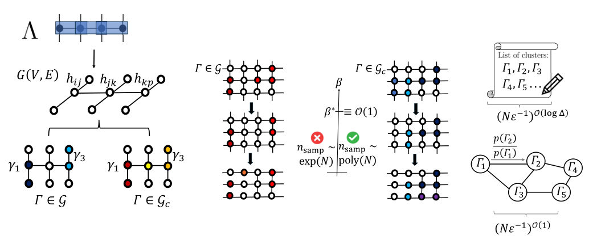
<figcaption class="paper-figure-caption"><b>Fig 1.</b> FIG. 1: Illustration of our sign-problem-free cluster sampling framework. (a) Polymer model representation on a host graph G(V, E) ≡Gint(V, E) for a quantum many-body system on a lattice Λ, where vertices correspond to local Hamiltonian terms hi and polymers are connected subgraphs of G(V, E). Top: A cluster Γ ∈GC (connected multiset of polymers). Bottom: An admissible configuration Γ ∈G (mutually disconnected polymers). Note different polymers are depicted by different colors. (b) Typical approaches such as Glauber dynamics sample physical configurations targeting Z, suffering from the exponential sign problem, whereas sampling connected clusters targeting log Z is sign-problem-free for...</figcaption>
</figure>
<figure class="paper-figure-card">
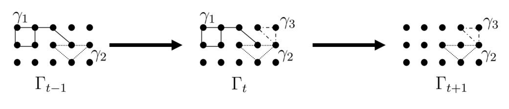
<figcaption class="paper-figure-caption"><b>Fig 2.</b> FIG. 2: Illustration of the Cluster Markov chain PMC. Here the clusters are depicted in the lattice Λ rather that in the graph G(V, E) as in Fig. 1a.</figcaption>
</figure>
<figure class="paper-figure-card">
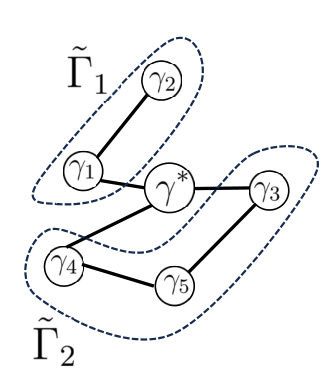
<figcaption class="paper-figure-caption"><b>Fig 3.</b> FIG. 3: Example of decomposition of a cluster Γ which contains γ∗as a set of sub-clusters ˜Γi.</figcaption>
</figure>
<figure class="paper-figure-card">
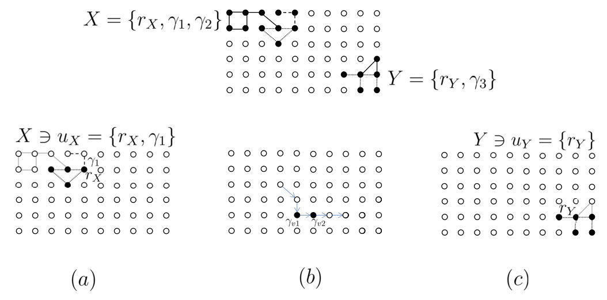
<figcaption class="paper-figure-caption"><b>Fig 4.</b> FIG. 4: Illustration of the three phases of the canonical path PXY between initial cluster X and target cluster Y . (a) A step in the peeling phase, where the intermediate cluster uX remains strictly contained within X (uX ⊆X). (b) A step in the transport phase, where the intermediate state contains at most two polymers propagating along the geodesic in the connected covering graph ˜G( ˜V , ˜E) between the roots rX and rY . (c) A step in the construction phase, where the intermediate cluster uY is assembled such that it remains strictly contained within Y (uY ⊆Y ). In panels (a) and (c), the inactive polymers—those already removed from X or yet to be added to Y —are shaded in gray to...</figcaption>
</figure>
</div>

<p><strong>Summary.</strong> This paper presents a novel Markov Chain Monte Carlo approach to calculate quantum partition functions by sampling cluster expansions directly. By operating in the abstract cluster space rather than the physical configuration space, it successfully bypasses the notorious sign problem plaguing traditional Quantum Monte Carlo methods. This results in significantly improved, polynomial-time algorithms for a wide range of quantum many-body models.</p>
<p><strong>Why it may be interesting.</strong> This work provides a powerful algorithmic tool for calculating thermal properties of complex quantum systems, which is highly relevant for simulating quantum materials or lattice models where exact diagonalization is impossible.</p>
<details>
<summary>Detailed structure</summary>
<p><strong>Main problem.</strong> The primary challenge is overcoming the sign problem in Quantum Monte Carlo methods and improving the computational scaling for calculating quantum partition functions in many-body systems.</p>
<p><strong>Main result.</strong> The authors introduce a Markov Chain Monte Carlo algorithm that samples cluster expansions directly, circumventing the sign problem and achieving improved polynomial scaling, such as $   ilde{\mathcal{O}}(N^{3+1/D\epsilon-3})$ for low-temperature quantum partition functions.</p>
<p><strong>Method.</strong> The core method replaces deterministic, exhaustive enumeration of connected clusters with a specialized MCMC sampling algorithm operating in the abstract cluster space.</p>
<p><strong>Model / system.</strong> The work applies to quantum many-body systems on a D-dimensional lattice, calculating the partition function $Z_eta = 	ext{Tr}[e^{-eta H}]$ using cluster expansion techniques.</p>
<p><strong>Key observables.</strong> The quantum partition function $Z_eta$ and its logarithm, $\log Z$, are the key observables.</p>
<p><strong>Important parameters / regimes.</strong> System size ($N$), desired precision ($\varepsilon$), temperature ($eta$), and the interaction decay rate ($\alpha$).</p>
<p><strong>Assumptions / limitations.</strong> The method assumes the convergence regime of the cluster expansion and requires specific conditions on the inverse temperature ($eta \le eta_{	ext{sampling}}$) to ensure efficient sampling.</p>
<p><strong>Figures summary.</strong> Figure 1 illustrates the sign-problem-free cluster sampling framework, comparing it to deterministic enumeration and showing the polymer model representation.</p>
<p><strong>Paper structure.</strong> The paper develops the theory by relating the partition function to a sum over connected polymers, establishing convergence conditions (like Condition 3 and 4), and then introducing a specialized Polymer Sampler algorithm to achieve efficient, sign-problem-free sampling.</p>
</details>
<details>
<summary>Abstract</summary>
<p>The sign problem remains a major obstacle to extending the success of Monte Carlo methods to generic quantum many-body systems. A powerful alternative relies on cluster expansions, which provide convergent representations of free energies and related quantities, with applications ranging from tensor network contractions to quantum dynamics and circuits. Within their convergence regime, these expansions often yield deterministic polynomial-time algorithms. However, such methods require exhaustive enumeration of connected clusters, leading to a computational overhead of $(N\varepsilon^{-1})^{\mathcal{O}(\logΔ)}$, where $N$ is the system size, $\varepsilon$ the desired precision, and $Δ$ the interaction-graph degree. This becomes particularly severe in long-range systems, where $Δ\equiv N$, resulting in quasi-polynomial runtimes. Here, we introduce a Markov chain algorithm that samples cluster expansions directly in the space of connected clusters, replacing deterministic enumeration by Monte Carlo sampling. Because sampling occurs in an abstract cluster space rather than a physical configuration space, the conventional exponential sign problem is absent within the convergence regime. For general polymer models, we establish an FPRAS with runtime $\tilde{\mathcal{O}}(N^4\varepsilon^{-3})$. For quantum partition functions at temperatures $β\leqβ_{\mathrm{sampling}}\equiv\mathcal{O}(1)$, this improves to $\tilde{\mathcal{O}}(N^{3+1/D}\varepsilon^{-3})$, where $D$ is the lattice dimension. The framework directly applies to long-range quantum systems with interactions $\propto1/r^α$, including $2$-local models with $α>2D$.</p>
</details>
<p><sub><a href="#top">↑ back to top</a></sub></p>

<p><a id="paper-2610.03921"></a></p>
<h3 id="escaping-the-composite-fermi-sea-an-incompressible-state-at-half-filling-in-graphenes-lowest-landau-level"><a href="http://arxiv.org/abs/2610.03921v1">Escaping the Composite Fermi Sea: An Incompressible State at Half Filling in Graphene's Lowest Landau Level</a></h3>
<p><strong>Authors:</strong> Domagoj Perkovic, Ziwei Wang, Steven Herbert Simon<br>
<strong>Type:</strong> theory · <strong>Category:</strong> strongly correlated electrons · <strong>PDF:</strong> <a href="https://arxiv.org/pdf/2610.03921v1">https://arxiv.org/pdf/2610.03921v1</a><br>
<strong>Analysis basis:</strong> full PDF text, analyzed in chunks
<strong>Topic relevance:</strong> <code>Keldysh / 2PI / non-Gaussian methods</code> <strong>1/5</strong> · <code>analog quantum simulation</code> <strong>1/5</strong></p>
<div class="figure-strip-hint">↔ Scroll figures horizontally</div>
<div class="paper-figures-scroll">
<figure class="paper-figure-card">
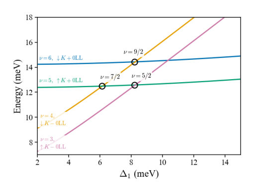
<figcaption class="paper-figure-caption"><b>Fig 1.</b> FIG. 1. Single-particle dispersion and 0LL crossings. The dispersion of the four relevant zeroth Landau levels (0LLs) is shown as a function of the interlayer potential ∆1 at B = 16 T. The spin and valley character of each level is in- dicated together with the corresponding integer filling factor. Open circles mark the 0LL crossings at half-integer fillings ν = 5/2, 7/2, and 9/2, where incompressible states are ob- served experimentally. We note that even though there are two crossings for ν = 7/2, only one of them observes an in- compressible state.</figcaption>
</figure>
<figure class="paper-figure-card">
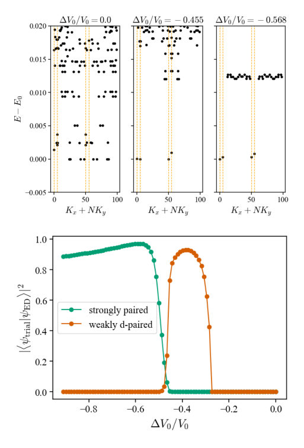
<figcaption class="paper-figure-caption"><b>Fig 2.</b> FIG. 2. Evolution of the low-energy exact diagonalization spectrum and the ground-state wavefunction overlap as the interaction strength is tuned through ∆V0/V0. Top: Low- energy spectra for three representative interaction strengths: ∆V0/V0 = 0.0 (left), −0.45 (center), and −0.57 (right). The vertical dashed lines indicate the momentum sectors expected for the ground state in the weak- and strong-pairing phases. Bottom: Squared overlap of the exact ground state with repre- sentative variational wavefunctions for the strong-pairing and weak d-paired phases. The overlap reveals two phase tran- sitions as the interaction is varied: first from the composite Fermi liquid (CFL) to the weak...</figcaption>
</figure>
<figure class="paper-figure-card">
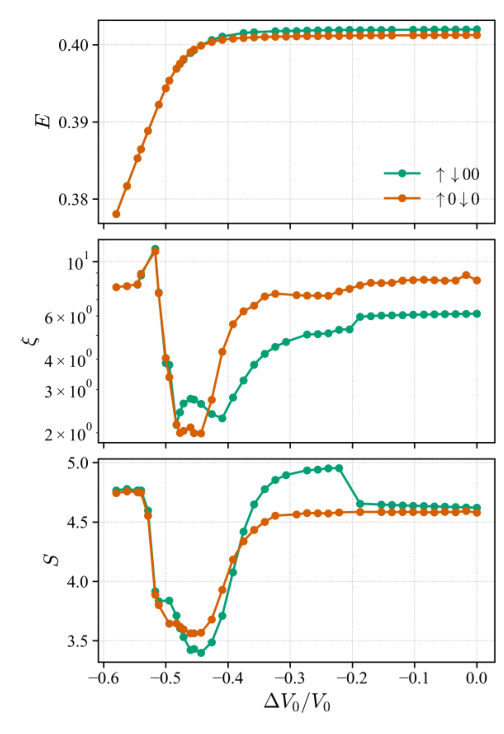
<figcaption class="paper-figure-caption"><b>Fig 3.</b> FIG. 3. Diagnostics of the CFL-to-weak-pairing and weak- to-strong-pairing transitions. Top panel shows the energies of two root configurations as a function of ∆V0. At small ∆V0, the energies are non-degenerate, while they become degener- ate around ∆V0/V0 ≈−0.4. This indicates a transition from the CFL to the weak-pairing phase, since the different sectors are expected to be degenerate in both the weak- and strong- pairing phases. Middle shows the correlation length as a func- tion of ∆V0. Initially, the correlation length is relatively large, consistent with the CFL phase. Around ∆V0/V0 ≈−0.34, it begins to decrease and eventually saturates, providing fur- ther evidence for a transition...</figcaption>
</figure>
<figure class="paper-figure-card">
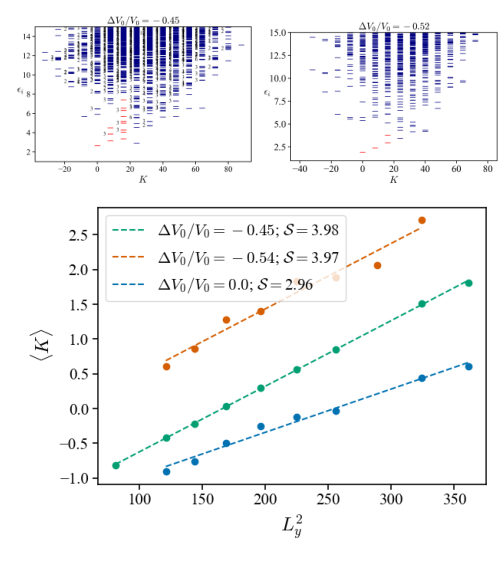
<figcaption class="paper-figure-caption"><b>Fig 4.</b> FIG. 4. Entanglement spectra and the topological shift. Top: Entanglement spectra for ∆V0/V0 = −0.45 and ∆V0/V0 = −0.52, respectively. We find that the low-lying counting, marked in red, for ∆V0/V0 = −0.45 is consistent with the weak-pairing state, while that for ∆V0/V0 = −0.52 is consis- tent with the strong-pairing state. Bottom: Topological shift for the same two interaction strengths. Both ∆V0/V0 = −0.45 and ∆V0/V0 = −0.54 yield a shift S = 4, consistent with the weak- and strong-pairing phases, respectively. In contrast, V0 = 0 yields S = 3, although the data are considerably less well resolved, as one might expect for a gapless state. Further entanglement spectrum evidence is...</figcaption>
</figure>
<figure class="paper-figure-card">
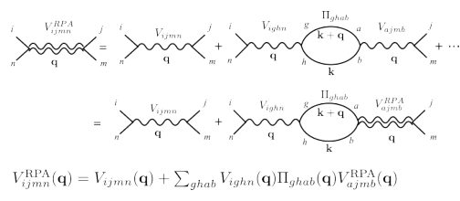
<figcaption class="paper-figure-caption"><b>Fig 5.</b> FIG. 5. RPA screening of the Coulomb interaction. Dia- grammatic representation of the Dyson equation for the RPA- screened interaction V RPA. Single wavy lines denote the bare Coulomb interaction V , while double wavy lines denote the RPA-screened interaction V RPA. Solid lines represent single- particle propagators, and Π denotes the polarization four- tensor. The indices i, j, m, n, g, h, a, b collectively represent the suppressed layer, valley, sublattice, Landau-level, and spin degrees of freedom. The bottom equation gives the corre- sponding self-consistent Dyson equation for V RPA.</figcaption>
</figure>
</div>

<p><strong>Summary.</strong> This theoretical study investigates the exotic, incompressible quantum Hall states observed in graphene's lowest Landau level. By combining ED, iDMRG, and RPA, the authors map out the necessary microscopic interactions—specifically Landau-level mixing—required to stabilize these gapped phases against the expected gapless composite Fermi liquid state. The findings point toward a strongly paired composite-fermion ground state as the most plausible candidate.</p>
<p><strong>Why it may be interesting.</strong> This work is highly relevant to AMO physics and strongly correlated electron theory as it tackles the complex interplay between geometry (graphene layers), strong magnetic fields, and electron-electron interactions to predict novel quantum ground states.</p>
<details>
<summary>Detailed structure</summary>
<p><strong>Main problem.</strong> The paper addresses the theoretical challenge of understanding the microscopic mechanism stabilizing incompressible, gapped fractional quantum Hall states observed in graphene at half-filling of the zeroth Landau level, which contradicts the expected gapless composite Fermi liquid behavior.</p>
<p><strong>Main result.</strong> The authors find that the interplay between Landau-level mixing (treated via RPA screening) and ultra-short-range interactions is a plausible mechanism stabilizing a strongly paired composite-fermion phase, although other analyses suggest the system might remain gapless.</p>
<p><strong>Method.</strong> The study employs advanced theoretical techniques including Exact Diagonalization (ED), Infinite Density Matrix Renormalization Group (iDMRG), and Random-Phase Approximation (RPA) to model electron interactions and correlations.</p>
<p><strong>Model / system.</strong> The system is graphene (monolayer and trilayer) subjected to a strong magnetic field, focusing on the physics within the lowest Landau level (LLL). The model incorporates long-range Coulomb interactions modified by short-range corrections and Landau-level mixing.</p>
<p><strong>Key observables.</strong> Incompressible gap size ($\Delta\mu$), correlation length ($\xi$), entanglement entropy ($S$), and the overlap between the calculated state and known reference phases (CFL, paired states).</p>
<p><strong>Important parameters / regimes.</strong> Filling factor ($
u$), displacement field parameter ($\Delta_1$), interaction strength ($\Delta V_0/V_0$), and the RPA screening parameter ($b$).</p>
<p><strong>Assumptions / limitations.</strong> The analysis relies on approximations such as the Random-Phase Approximation (RPA) for screening and assumes that the observed incompressible states are stabilized by specific combinations of short-range and mixing effects.</p>
<p><strong>Figures summary.</strong> Figures illustrate the single-particle dispersion and 0LL crossings vs. displacement field, and show diagnostics (energy, entropy, correlation length) from iDMRG calculations to distinguish between gapless and gapped phases.</p>
<p><strong>Paper structure.</strong> The paper progresses by first analyzing the role of short-range corrections, then incorporating RPA screening to enhance pairing tendencies, and finally using iDMRG/ED to test the stability and nature (gapless vs. gapped) of the resulting ground state across various parameter regimes.</p>
</details>
<details>
<summary>Abstract</summary>
<p>Recent experiments in monolayer and trilayer graphene have observed incompressible even-denominator fractional quantum Hall states within narrow regions of parameter space associated with crossings of zeroth Landau levels. This is surprising because at half filling the Coulomb interaction in the zeroth Landau level is expected to favour a compressible composite Fermi liquid. Here we provide the first quantitative energetic study of the candidate incompressible phases and of the microscopic mechanisms that can stabilise them near such Landau-level crossings. Using exact diagonalization and infinite density-matrix renormalisation group, we first study ultra-short-range corrections to the Coulomb interaction arising from finite layer separation, lattice-scale effects, and electron-phonon coupling. We find that a sufficiently strong attractive short-range interaction drives the composite Fermi liquid first into a weakly paired \(d\)-wave pseudospin-singlet state and subsequently into a strongly paired state. However, microscopic estimates of these short-range corrections are far too small to stabilise either incompressible phase. We then incorporate Landau-level mixing through screening within the random-phase approximation. Screening substantially reshapes the effective interaction, suppresses the weak-pairing regime, and strongly enhances the tendency toward strong pairing. For a realistic range of microscopic parameters, the strongly paired phase is stabilised over a substantial fraction of that range. Our results identify the interplay of Landau-level mixing and ultra-short-range interactions as a plausible microscopic mechanism for the experimentally observed incompressible states in monolayer and trilayer graphene and point toward a strongly paired composite-fermion phase as their candidate ground state.</p>
</details>
<p><sub><a href="#top">↑ back to top</a></sub></p>

<p><a id="paper-2610.06797"></a></p>
<h3 id="from-quantum-tunneling-to-classical-optimization-through-instantons"><a href="http://arxiv.org/abs/2610.06797v1">From Quantum Tunneling to Classical Optimization through Instantons</a></h3>
<p><strong>Authors:</strong> Jiayu Shen, Dylan Herman, Guneykan Ozgul, Akshay Seshadri, Junhyung Lyle Kim, Shree Hari Sureshbabu, Shouvanik Chakrabarti, Niraj Kumar<br>
<strong>Type:</strong> theory · <strong>Category:</strong> statistical mechanics · <strong>PDF:</strong> <a href="https://arxiv.org/pdf/2610.06797v1">https://arxiv.org/pdf/2610.06797v1</a><br>
<strong>Analysis basis:</strong> full PDF text, analyzed in chunks
<strong>Topic relevance:</strong> <code>Keldysh / 2PI / non-Gaussian methods</code> <strong>1/5</strong> · <code>methods for driven-dissipative</code> <strong>1/5</strong></p>
<div class="figure-strip-hint">↔ Scroll figures horizontally</div>
<div class="paper-figures-scroll">
<figure class="paper-figure-card">
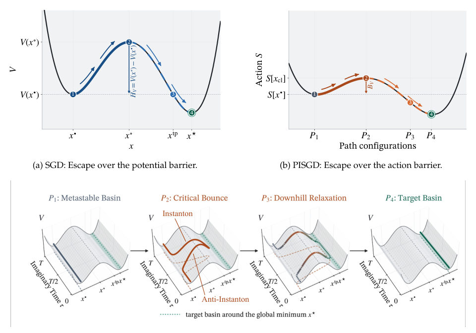
<figcaption class="paper-figure-caption"><b>Fig 1.</b> Figure 1: Barrier-escape mechanisms of SGD and PISGD for a one-dimensional potential V. In (a), SGD evolves a single point x and must climb a potential barrier of height HV. In (b), PISGD instead evolves an entire path. Along the schematic slice of the path-integral action shown here, the relevant barrier is the bounce action BV. The four path configurations marked on this action profile are shown explicitly in (c). Here, P1 is the constant path at the metastable local minimum x•, while P2 is the critical bounce, the labeled instanton–anti-instanton pair, at the top of the action barrier. After this barrier is crossed, P3 undergoes downhill relaxation, and P4 is the constant path at the...</figcaption>
</figure>
<figure class="paper-figure-card">
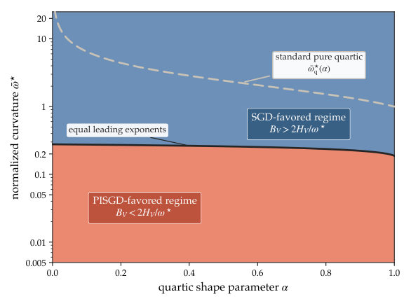
<figcaption class="paper-figure-caption"><b>Fig 2.</b> Figure 2: Concentration-adjusted PISGD- and SGD-favored parameter regimes for the separable variant quartic potential. In the orange PISGD-favored region, BV &lt; 2HV/ω⋆, so PISGD has the smaller leading exponent. In the blue SGD-favored region, BV &gt; 2HV/ω⋆, so SGD has the smaller leading exponent. The small open circle marks the setting (α, ¯ω⋆) = (0.9, 0.1) used in our variant-quartic numerical experiments. The dashed gray curve is the normalized-curvature curve ¯ω⋆ q(α) of the standard pure quartic and lies en- tirely in the SGD-favored regime. Although the pure quartic is not literally a quartic branch joined to a quadratic branch, the same comparison applies.</figcaption>
</figure>
<figure class="paper-figure-card">
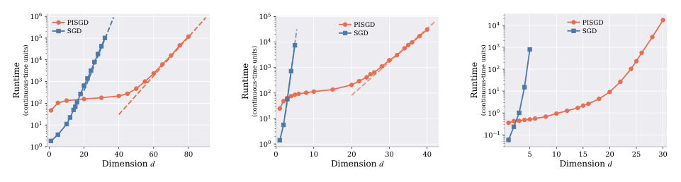
<figcaption class="paper-figure-caption"><b>Fig 3.</b> Figure 3: Comparison of PISGD and SGD to solution for different potentials across different dimensions d, measured in terms of the number of gradient steps times the learning rate. Figure 3(a) is for the single component of a quartic potential in equation (6). Figure 3(b) is for the Gaussian spike in equation (7). Figure 3(c) is for a non-separable example detailed in Section 5.3. For separable potential cases, the dashed lines show the theoretically predicted scalings in the large d asymptotic limit.</figcaption>
</figure>
<figure class="paper-figure-card">
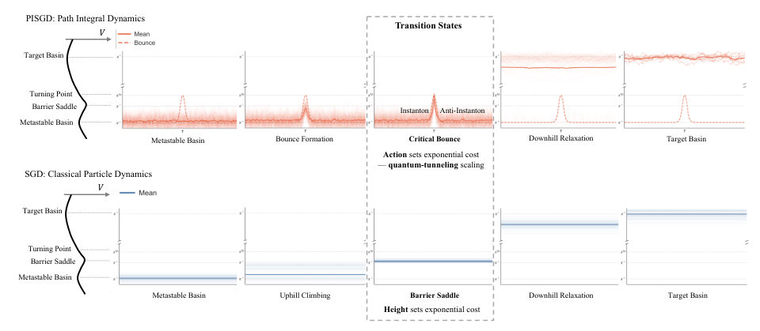
<figcaption class="paper-figure-caption"><b>Fig 4.</b> Figure 4: Event-aligned escape dynamics in numerical PISGD (upper row) and SGD (lower row) runs on the one-dimensional variant quartic potential with α = 0.9, c = 100, and ¯ω⋆= 0.1. Thin curves show the individual runs included in each panel, thick curves show their mean, and the dashed profile in the upper row is the bounce profile. In the central PISGD panel, the aligned mean path closely follows the bounce, displaying the predicted instanton–anti-instanton transition profile. The full path subsequently relaxes toward x⋆. By contrast, SGD crosses the barrier as a single scalar, plotted as a constant path. Because the runs are aligned to run-specific reference events, the panels compare...</figcaption>
</figure>
<figure class="paper-figure-card">
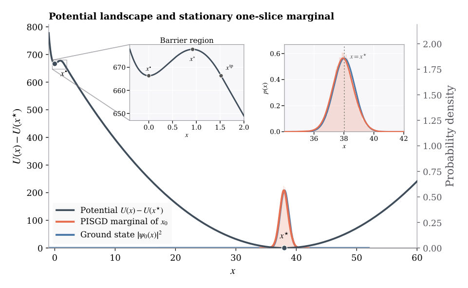
<figcaption class="paper-figure-caption"><b>Fig 5.</b> Figure 5: Numerical comparison of the PISGD one-slice marginal with the quantum ground-state den- sity for the one-dimensional variant quartic potential with α = 0.9, ¯ω⋆= 0.1, and c = 100. The main panel shows the single-component potential U(x) −U(x⋆) on the left vertical axis. The right vertical axis corresponds to the density of the PISGD slice x0 (orange histogram) from numerics, an Gaussian kernel- density estimate (orange curve), and the normalized ground-state density |ψ0(x)|2 (blue curve). The left inset zooms into the metastable minimum x•, saddle x◦, and turning point xtp. The right inset zooms in for the density comparison near the global minimum. The observed agreement between...</figcaption>
</figure>
</div>

<p><strong>Summary.</strong> This paper analyzes how Path Integral Stochastic Gradient Descent (PISGD) can leverage quantum tunneling concepts to accelerate optimization. By adapting instanton theory, the authors demonstrate that PISGD's escape time scales with the 'bounce action' rather than the classical barrier height. This suggests a potential classical advantage over standard gradient descent methods in overcoming local minima traps.</p>
<p><strong>Why it may be interesting.</strong> It provides a powerful theoretical bridge, showing how classical optimization methods can mimic the exponential advantages associated with quantum tunneling phenomena, which is relevant for understanding escape rates in complex quantum systems.</p>
<details>
<summary>Detailed structure</summary>
<p><strong>Main problem.</strong> The paper addresses the challenge of finding the global minimum of a nonconvex objective function, which is often hindered by local minima separated by potential barriers.</p>
<p><strong>Main result.</strong> The authors show that Path Integral Stochastic Gradient Descent (PISGD) inherits an escape time scaling governed by the 'bounce action' ($B_V$), mirroring quantum tunneling, rather than the classical barrier height ($H_V$).</p>
<p><strong>Method.</strong> The analysis adapts Kramers' escape-rate theory and instanton analysis to the path space associated with PISGD, providing a theoretical comparison to classical noise-driven optimization.</p>
<p><strong>Model / system.</strong> The model compares classical optimization algorithms like SGD with PISGD, which uses Path Integral Monte Carlo (PIMC) formalism to simulate quantum tunneling effects in the context of global optimization.</p>
<p><strong>Key observables.</strong> Escape time scaling ($\exp(-\lambda B_V)$ vs $\exp(-\lambda H_V)$), bounce action ($B_V$), and barrier height ($H_V$).</p>
<p><strong>Important parameters / regimes.</strong> The ratio between the bounce action and the barrier height determines whether PISGD offers an advantage over SGD.</p>
<p><strong>Assumptions / limitations.</strong> PISGD only retains incoherent tunneling, meaning the analysis does not rule out a potential quantum advantage for genuinely quantum-tunneling-based algorithms.</p>
<p><strong>Figures summary.</strong> Figures contrast the escape mechanisms of SGD (climbing $H_V$) versus PISGD (crossing $B_V$) in 1D potentials, mapping parameter regimes where PISGD is theoretically favored.</p>
<p><strong>Paper structure.</strong> The paper progresses by introducing the optimization bottleneck, detailing PISGD, analyzing the scaling laws using Kramers' theory, confirming results numerically for various potentials, and concluding with limitations regarding true quantum advantage.</p>
</details>
<details>
<summary>Abstract</summary>
<p>We use an instanton-based analysis to show that Path Integral Stochastic Gradient Descent (PISGD), a classical optimization algorithm instantiated from path integral Monte Carlo (PIMC), can inherit the quantum tunneling mechanism. Quantum tunneling is the phenomenon in which a quantum particle passes through a potential barrier that a classical trajectory cannot cross in the same way. This mechanism can contribute to the performance of quantum optimization algorithms, since a common bottleneck in optimization is that the solution becomes trapped in a local minimum, separated from better solutions by a potential barrier. Classical noise-driven optimizers, such as stochastic gradient descent (SGD), have escape times that scale exponentially with the potential barrier height. For quantum tunneling, the escape time is instead exponential in the bounce action, which equals twice the Agmon distance between the two basins. When the barrier is tall but thin, quantum tunneling can allow escaping local minima faster than such classical methods. Remarkably, this scaling is not exclusive to algorithms with genuine quantum dynamics. For PISGD applied to classical nonconvex global optimization, we adapt Kramers' escape-rate theory to path space and obtain the same exponential scaling as quantum tunneling, in terms of the bounce action rather than the barrier height. We confirm this scaling numerically by implementing PISGD for both separable and nonseparable potentials. That said, PISGD retains only incoherent tunneling, since coherence among multiple tunneling paths is absent. Our analysis therefore does not rule out a potential quantum advantage for quantum-tunneling-based algorithms over classical ones in general.</p>
</details>
<p><sub><a href="#top">↑ back to top</a></sub></p>

<p><a id="paper-2610.05901"></a></p>
<h3 id="fusion-assisted-decoding-of-non-abelian-topological-order"><a href="http://arxiv.org/abs/2610.05901v1">Fusion-assisted decoding of non-Abelian topological order</a></h3>
<p><strong>Authors:</strong> Rohith Sajith, Yabo Li, Zijian Song, Tsung-Cheng Lu, Carolyn Zhang<br>
<strong>Type:</strong> theory · <strong>Category:</strong> quantum information and computing · <strong>PDF:</strong> <a href="https://arxiv.org/pdf/2610.05901v1">https://arxiv.org/pdf/2610.05901v1</a><br>
<strong>Analysis basis:</strong> full PDF text, analyzed in chunks
<strong>Topic relevance:</strong> <code>analog quantum simulation</code> <strong>1/5</strong> · <code>quantum measurements</code> <strong>1/5</strong></p>
<div class="figure-strip-hint">↔ Scroll figures horizontally</div>
<div class="paper-figures-scroll">
<figure class="paper-figure-card">
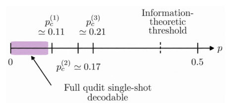
<figcaption class="paper-figure-caption"><b>Fig 1.</b> FIG. 1. The phase diagram of the D4 quantum double under the non-Abelian E charge decoherence, with a noise strength parameterized by p. Refining the syndrome sets from S(1)</figcaption>
</figure>
<figure class="paper-figure-card">
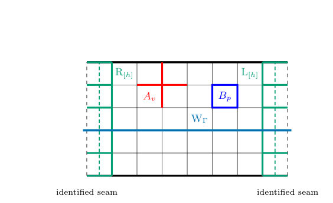
<figcaption class="paper-figure-caption"><b>Fig 2.</b> FIG. 2. Stabilizers and logical operators of the quantum double on a cylinder. The vertex stabilizer Av acts on the four edges incident on v, while the plaquette stabilizer Bp acts on the edges surrounding p. The dashed vertical sides are identified. The charge line WΓ, labeled by an irreducible representation Γ ∈Irr(G), winds around the periodic direc- tion. The conjugacy-class-labelled flux ribbons R[h] and L[h] connect the two open boundaries along dual-lattice paths. In the displayed convention, R[h] lies to right of the seam and L[h] lies to the left of the seam. The dashed green centerlines mark the dual paths, while the solid green segments indicate the corresponding ribbon supports.</figcaption>
</figure>
<figure class="paper-figure-card">
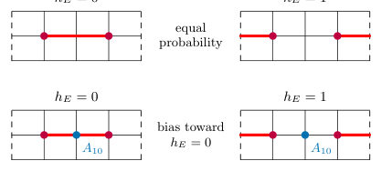
<figcaption class="paper-figure-caption"><b>Fig 3.</b> FIG. 3. A schematic of how additional onsite charge informa- tion modifies the posterior distribution over homology classes and improves the threshold of maximum-likelihood decoders. The dashed sides are identified, the purple dots are E anyons, the red lines are representative error histories, and homology is defined relative to the short reference closure. (a) The coarse record γ gives equal weight to the two displayed histo- ries. (b) Resolving the intervening Abelian charge A10 makes the direct history compatible with an E-containing compo- nent, whereas the displayed winding history leaves an isolated nontrivial charge in an E-free component. This comparison concerns representative...</figcaption>
</figure>
<figure class="paper-figure-card">
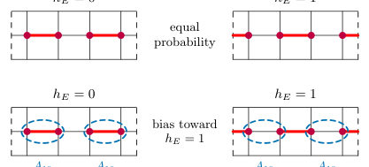
<figcaption class="paper-figure-caption"><b>Fig 4.</b> FIG. 4. A schematic of how additional pair-fusion information modifies the posterior distribution over homology classes be- yond the onsite charge record. The purple dots are E anyons, and the blue dashed loops indicate the measured pairs (1, 2) and (3, 4), with fusion outcomes q12 = q34 = A10. The two displayed error histories have the same onsite syndrome. For the hE = 0 history, adjoining the matching edges produces two components, each carrying a single nontrivial charge A10, so this history is incompatible with the fusion record. For the hE = 1 history, the augmented graph forms one component whose total charge is A10 × A10 = A00 = 1, so this history remains compatible. Thus the fusion...</figcaption>
</figure>
<figure class="paper-figure-card">
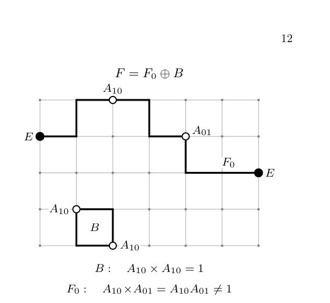
<figcaption class="paper-figure-caption"><b>Fig 5.</b> FIG. 5. Edge configurations contributing to the complete onsite record S(2). For a fixed set γ of measured E charges, we choose a reference configuration F0 satisfying ∂F0 = γ. Every compatible configuration can then be written as F = F0 ⊕B, where B consists of neutral components with only Abelian anyons. For example, on component B shown, we indeed have A10 ×A10 = 1. In contrast, a component terminating on E charges need not be Abelian-neutral because E×A ≃E for every Abelian charge A; hence the open component F0 may carry A10 × A01 = A11 ̸= 1.</figcaption>
</figure>
</div>

<p><strong>Summary.</strong> This paper advances quantum error correction theory by developing improved Maximum Likelihood decoders for topological codes based on non-Abelian anyons. The authors show that incorporating measurements of anyon fusion outcomes significantly boosts the noise threshold for recovering the logical information. This work is crucial for realizing fault-tolerant quantum computation using advanced topological materials.</p>
<p><strong>Why it may be interesting.</strong> This work provides concrete, advanced techniques for error correction beyond the well-understood Abelian case, directly impacting the feasibility of building topological quantum computers using exotic anyonic excitations.</p>
<details>
<summary>Detailed structure</summary>
<p><strong>Main problem.</strong> The paper addresses the challenge of developing and improving Maximum Likelihood (ML) decoders for quantum error correction in topological quantum memories based on non-Abelian anyons.</p>
<p><strong>Main result.</strong> By incorporating refined syndrome sets that measure non-Abelian anyon fusion outcomes, the ML decoder performance is systematically improved, allowing for the single-shot recovery of the central logical qudit up to a non-zero noise threshold.</p>
<p><strong>Method.</strong> The authors analyze the decoding problem by mapping it to classical statistical-mechanics models and constructing explicit decoders for specific non-Abelian models, such as the $D_4$ quantum double.</p>
<p><strong>Model / system.</strong> The focus is on quantum memories exhibiting non-Abelian topological order, modeled using quantum double groups (e.g., $D_4$) on a cylinder geometry under charge noise. The decoding process involves measuring various syndrome sets, including local excitations and pair-fusion outcomes.</p>
<p><strong>Key observables.</strong> Decoding thresholds ($p_c$), the purity of the logical state ($ ext{Tr}(
ho^2)$), and the coherence information $I^{(2)}_{c,d}$.</p>
<p><strong>Important parameters / regimes.</strong> Noise strength ($p$), the structure of the non-Abelian group ($D_4$), and the type of syndrome measurement used ($S(1), S(2), S(3)$).</p>
<p><strong>Assumptions / limitations.</strong> The analysis assumes that refining syndrome sets by measuring fusion outcomes systematically improves performance, although this comes at the cost of potentially losing information outside the central qudit.</p>
<p><strong>Figures summary.</strong> Figure 1 illustrates how refining syndrome sets ($S(1) 	o S(2) 	o S(3)$) improves the decoding threshold for the $D_4$ quantum double. Other figures show the phase diagram and stabilizer structures on a cylinder.</p>
<p><strong>Paper structure.</strong> The paper systematically defines the non-Abelian model, calculates the probabilities associated with different syndrome measurements ($S(1), S(2), S(3)$), and then focuses on deriving the ML decoders and calculating the resulting noise thresholds for the central qudit.</p>
</details>
<details>
<summary>Abstract</summary>
<p>Maximum likelihood (ML) decoders perform quantum error correction by measuring a set of syndromes, classically computing an optimal recovery based on these syndromes and the noise model, and then performing that recovery. ML decoders are well understood for the toric code and generalize straightforwardly to other surface codes with Abelian anyons, where they can saturate information-theoretic decoding thresholds. On the other hand, codes with non-Abelian anyons have become increasingly relevant because they can support transversal or constant-depth non-Clifford gates and admit efficient preparation protocols in modern quantum devices. However, they present new challenges for decoding: non-Abelian anyons cannot in general be deterministically annihilated, and the logical operators cannot be classified by Abelian homology. In this work, we show that refined syndrome sets, including measurements that resolve non-Abelian anyon fusion outcomes, systematically improve the performance of ML decoders. We demonstrate this concretely by constructing explicit decoders for the $D_4$ quantum double model under charge noise, and obtaining numerical results for thresholds via mappings to classical statistical-mechanics models. We show that there is a nonzero noise threshold below which the entire logical qudit can be recovered with a single round of measurements.</p>
</details>
<p><sub><a href="#top">↑ back to top</a></sub></p>

<p><a id="paper-2610.05160"></a></p>
<h3 id="paramagnon-softening-upon-doping-in-oxychloride-cuprate-superconductors"><a href="http://arxiv.org/abs/2610.05160v1">Paramagnon softening upon doping in oxychloride cuprate superconductors</a></h3>
<p><strong>Authors:</strong> Chafic Fawaz, Léo Gaspard, Laura Chaix, Luca Laveder, Benjamin Bacq-Labreuil, Victor Porée, Flora Yakhou-Harris, Kurt Kummer, Nicholas B. Brookes, Alessandro Nicolaou, Hajime Yamamoto, Yuichi Okazaki, Ikuya Yamada, Masaki Azuma, David Santos-Cottin, Marie-Aude Méasson, Benjamin Lenz, Matteo d'Astuto<br>
<strong>Type:</strong> both · <strong>Category:</strong> strongly correlated electrons · <strong>PDF:</strong> <a href="https://arxiv.org/pdf/2610.05160v1">https://arxiv.org/pdf/2610.05160v1</a><br>
<strong>Analysis basis:</strong> full PDF text, analyzed in chunks
<strong>Topic relevance:</strong> <code>Keldysh / 2PI / non-Gaussian methods</code> <strong>1/5</strong> · <code>analog quantum simulation</code> <strong>1/5</strong></p>
<div class="figure-strip-hint">↔ Scroll figures horizontally</div>
<div class="paper-figures-scroll">
<figure class="paper-figure-card">
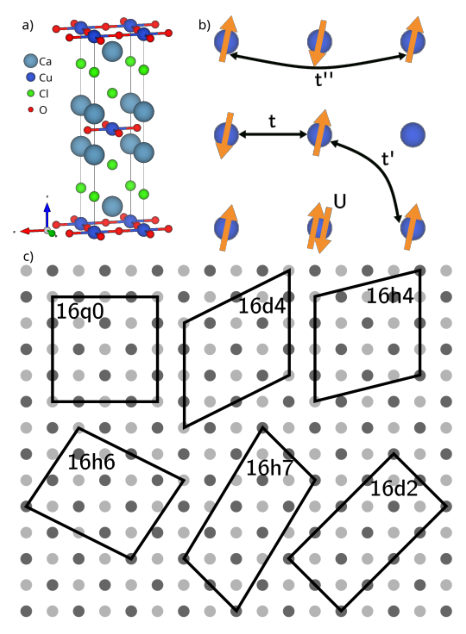
<figcaption class="paper-figure-caption"><b>Fig 1.</b> FIG. 1. (a) Tetragonal crystal structure of Ca2CuO2Cl2. (b) Effective one-band Hubbard model for the CuO2 layers. (c) The six 16-site Betts clusters used in the dynamical spin structure factor calculations (see [27, 28]). Dark and light grey represent the two sublattices of the Cu square lattice in the a-b plane, corresponding to magnetic sublattices for un- doped CCOC.</figcaption>
</figure>
<figure class="paper-figure-card">
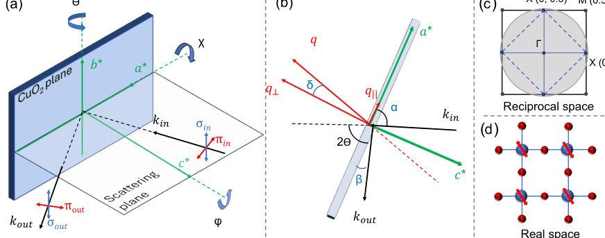
<figcaption class="paper-figure-caption"><b>Fig 2.</b> FIG. 2. (a) Side view of RIXS geometry, presenting the scattering plane with respect to the CuO2 planes and the incident and outgoing polarization. (b) Top view of RIXS geometry presenting the incident and outgoing wave vector (kin and kout), the transferred momentum q and its components (q∥, and q⊥), as well as the diffraction angle (2θ), and the incident(outgoing) angle α (β). (c) shows reciprocal space, where the solid line represents the crystalline Brillouin zone, the dashed line represents the magnetic Brillouin zone, and the grey area represents all accessible wave-vector values in Ca2CuO2Cl2 at the Cu L3 edge. (d) represents the square lattice of the CuO2 planes.</figcaption>
</figure>
<figure class="paper-figure-card">
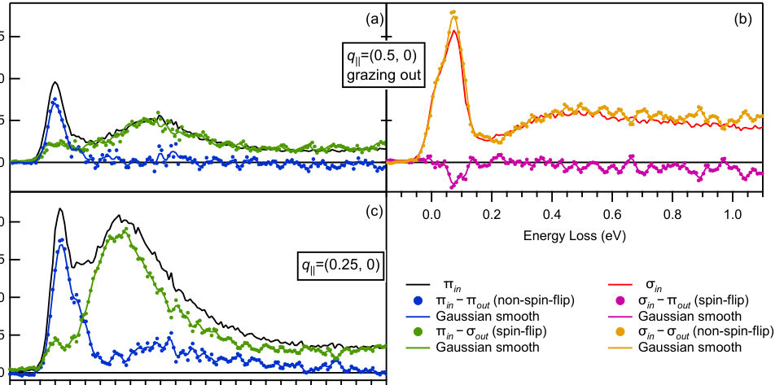
<figcaption class="paper-figure-caption"><b>Fig 3.</b> FIG. 3. RIXS measurements using polarimeter along (h, 0) direction, at q=(0.5, 0) taken with πin (a) and σin (b), and at q=(0.25, 0) with πin (c). The continuous black and red lines show the raw mixed-polarization data. The colored dots are the raw data of polarization-resolved spectra, while the continuous colored lines (red, green, purple, and orange) represent a Gaussian smooth.</figcaption>
</figure>
<figure class="paper-figure-card">
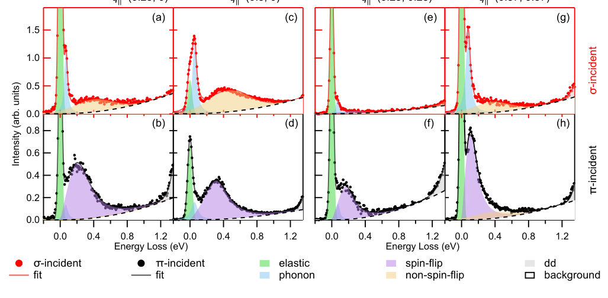
<figcaption class="paper-figure-caption"><b>Fig 4.</b> FIG. 4. Grazing-out geometry measurements for x = 0.10 doping, using the cross-fitting method to separate the Spin- Flip(magnon) from Non-Spin-Flip(multimagnon or charge excitations). The top row corresponds to σin where the Non-Spin- Flip is dominant, while the bottom row corresponds to the measurement with πin where the Spin-Flip is dominant. Panels (a)–(d) show data taken along the (h, 0) direction, and Panels (e)–(h) show data along the (h, h) direction.</figcaption>
</figure>
<figure class="paper-figure-card">
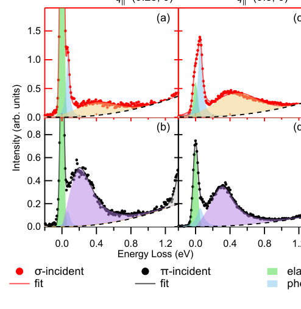
<figcaption class="paper-figure-caption"><b>Fig 5.</b> Figure 6 shows the doping dependence of the para- magnon dispersion, with all data taken in the high yield configuration, grazing-out configuration, and po- larimetry data. The paramagnon width for high yield measurements is plotted in Fig. 6(e). The paramagnon dispersion shows two main features:</figcaption>
</figure>
</div>

<p><strong>Summary.</strong> This work investigates the doping dependence of magnetic excitations in cuprate superconductors using RIXS experiments. The key finding is a significant softening of the paramagnon energy along the nodal direction upon doping. This experimental observation is successfully reproduced and explained by advanced theoretical calculations based on the one-band Hubbard model, highlighting the importance of higher-order hopping terms.</p>
<p><strong>Why it may be interesting.</strong> The detailed study of magnetic excitations in cuprates, particularly the role of doping in modifying magnetic correlations, is central to understanding the mechanism behind high-temperature superconductivity, a topic of major interest in strongly correlated electron physics.</p>
<details>
<summary>Detailed structure</summary>
<p><strong>Main problem.</strong> The study aims to understand how magnetic excitations (paramagnons) and exchange interactions change as doping is introduced in oxychloride cuprate superconductors.</p>
<p><strong>Main result.</strong> The paramagnon energy shows a marked softening along the nodal direction ($\Gamma-M$) with doping, which is successfully explained by theoretical calculations using a one-band Hubbard model including higher-order hopping terms.</p>
<p><strong>Method.</strong> The research combines experimental measurements using Resonant Inelastic X-ray Scattering (RIXS) with theoretical calculations of the dynamical spin structure factor (DSSF) based on the Hubbard model.</p>
<p><strong>Model / system.</strong> The physical system is the oxychloride cuprate $    ext{Na}<em 2-x>x   ext{Ca}</em>_2$. The theoretical model employed is the one-band Hubbard model, incorporating hopping terms up to the third-nearest neighbor ($t''$).}   ext{CuO}_2  ext{Cl</p>
<p><strong>Key observables.</strong> Paramagnon dispersion, paramagnon bandwidth, and the energy shift ($\Delta E$) along the nodal direction $\Gamma-M$.</p>
<p><strong>Important parameters / regimes.</strong> Doping level ($x$), hopping parameters ($t, t', t''$), and temperature ($T$).</p>
<p><strong>Assumptions / limitations.</strong> The RIXS signal is assumed to be dominated by spin-flip excitations, and theoretical calculations use finite-size clusters (e.g., 16-site Betts clusters) with specific boundary conditions.</p>
<p><strong>Figures summary.</strong> Figures illustrate the crystal structure, the Hubbard model, and show the doping dependence of the paramagnon dispersion along various high-symmetry directions, comparing RIXS data fits with theoretical predictions.</p>
<p><strong>Paper structure.</strong> The paper establishes the physical problem using RIXS data, details the experimental measurements and data analysis techniques (including cross-fitting), presents the theoretical framework (Hubbard model, DSSF calculation), and finally compares the observed doping dependence of paramagnon softening with the model's predictions.</p>
</details>
<details>
<summary>Abstract</summary>
<p>Understanding how magnetic excitations and exchange interactions evolve with doping is crucial for deciphering the physics that shapes the phase diagram of high-temperature cuprate superconductors. Here, we clearly determine the behavior of the paramagnon dispersion in the oxychloride cuprate Na$_{x}$Ca$_{2-x}$CuO$_2$Cl$_2$ up to the highest doping level. We find that the paramagnon bandwidth, defined by the energy at the $X$ zone boundary $(0.5,0,0)$, remains unchanged within experimental uncertainty, even though it exhibits significant broadening. In contrast, along the nodal direction $Γ-M$ (\textit{i.e.}, from $(0,0,0)$ to $(0.5,0.5,0)$), the paramagnon energy shows a marked softening with doping, with a shift of up to $ΔE\sim150$ meV at the midpoint of the zone for the highest doping, which is about half of its initial value in the antiferromagnetic phase. Calculations of the dynamical spin structure factor for a one-band Hubbard model, including hopping terms up to the third-nearest neighbor ($t^{\prime\prime}$), explain this behavior and accurately reproduce the observed wave vector dependence and directional variation in the Brillouin zone.</p>
</details>
<p><sub><a href="#top">↑ back to top</a></sub></p>

<p><a id="paper-2610.05557"></a></p>
<h3 id="parisis-solution-of-the-sherrington-kirkpatrick-model-from-synchronous-monte-carlo-dynamics"><a href="http://arxiv.org/abs/2610.05557v1">Parisi's solution of the Sherrington--Kirkpatrick model from synchronous Monte Carlo dynamics</a></h3>
<p><strong>Authors:</strong> Yoshiyuki Kabashima<br>
<strong>Type:</strong> theory · <strong>Category:</strong> disordered systems and neural networks · <strong>PDF:</strong> <a href="https://arxiv.org/pdf/2610.05557v1">https://arxiv.org/pdf/2610.05557v1</a><br>
<strong>Analysis basis:</strong> full PDF text, analyzed in chunks
<strong>Topic relevance:</strong> <code>Keldysh / 2PI / non-Gaussian methods</code> <strong>1/5</strong> · <code>methods for driven-dissipative</code> <strong>1/5</strong></p>
<div class="figure-strip-hint">↔ Scroll figures horizontally</div>
<div class="paper-figures-scroll">
<figure class="paper-figure-card">
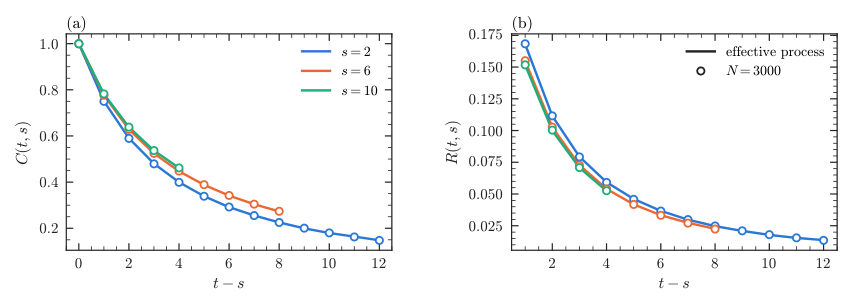
<figcaption class="paper-figure-caption"><b>Fig 1.</b> FIG. 1. Correlation (a) and response (b) functions of SyncMC for the SK model at β = 0.7,</figcaption>
</figure>
<figure class="paper-figure-card">
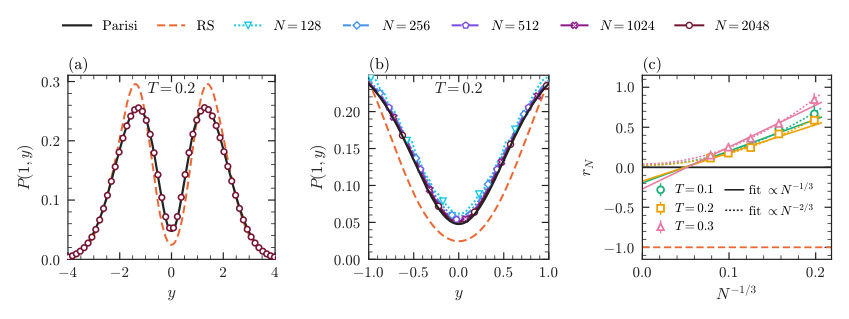
<figcaption class="paper-figure-caption"><b>Fig 2.</b> FIG. 2. Distribution of the actual local field yi = P j Jijσj in the SK model at H = 0. (a) P(1, y)</figcaption>
</figure>
<figure class="paper-figure-card">
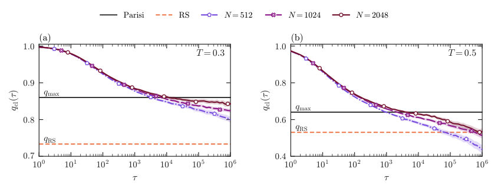
<figcaption class="paper-figure-caption"><b>Fig 3.</b> FIG. 3. Overlap of two clones started from the same equilibrium configuration, qcl(τ) = C(2τ), as</figcaption>
</figure>
<figure class="paper-figure-card">
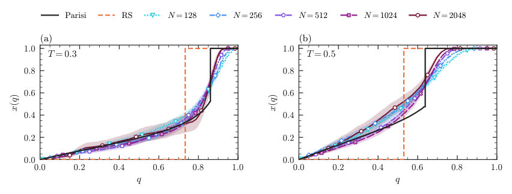
<figcaption class="paper-figure-caption"><b>Fig 4.</b> FIG. 4. Function x(q) estimated from the overlap distribution, Eq. (30), at T = 0.3 (a) and</figcaption>
</figure>
<figure class="paper-figure-card">
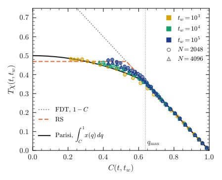
<figcaption class="paper-figure-caption"><b>Fig 5.</b> FIG. 5. Integrated response Tχ(t, tw) against the correlation C(t, tw) in relaxation from random</figcaption>
</figure>
</div>

<p><strong>Summary.</strong> This paper investigates the Sherrington-Kirkpatrick spin glass model by analyzing its dynamics using synchronous Monte Carlo (SyncMC) updates. The authors show that the dynamics obey an exact fluctuation-dissipation relation and, under appropriate time-scale assumptions, the long-time behavior reproduces the established Parisi equations. This provides strong numerical and theoretical evidence supporting the Parisi solution over simpler mean-field approximations.</p>
<p><strong>Why it may be interesting.</strong> The work provides a rigorous dynamical confirmation of the Parisi solution using a different, discrete-time simulation scheme (SyncMC), which is valuable for understanding the robustness of mean-field results in complex dynamics.</p>
<details>
<summary>Detailed structure</summary>
<p><strong>Main problem.</strong> To determine if the Parisi solution for the Sherrington–Kirkpatrick (SK) model, originally derived from continuous-time dynamics, can be reproduced using a discrete-time, synchronous Monte Carlo (SyncMC) dynamics.</p>
<p><strong>Main result.</strong> The long-time structure of the SyncMC dynamics reproduces the Parisi equations, including the Parisi partial differential equation, and equilibrium simulations confirm consistency with the Parisi solution over replica-symmetric predictions.</p>
<p><strong>Method.</strong> The authors analyze the SyncMC dynamics by deriving its fluctuation-dissipation relation and applying a dynamical mean-field approach, assuming widely separated time scales.</p>
<p><strong>Model / system.</strong> The study focuses on the Sherrington-Kirkpatrick (SK) model, a mean-field spin glass model characterized by random, symmetric pairwise couplings. The dynamics are simulated using a synchronous Monte Carlo (SyncMC) update rule.</p>
<p><strong>Key observables.</strong> Correlation function, response function, overlap distribution $x(q)$, and the fluctuation-dissipation ratio $x(q)$.</p>
<p><strong>Important parameters / regimes.</strong> Temperature ($T$), system size ($N$), and the assumption of widely separated time scales ($   au_K \ll \dots \ll  au_0$).</p>
<p><strong>Assumptions / limitations.</strong> The derivation relies on the assumption of widely separated time scales and that the SyncMC dynamics possesses an exact discrete-time fluctuation–dissipation relation.</p>
<p><strong>Figures summary.</strong> Figures compare the self-overlap $q_{cl}(	au)$ and the fluctuation-dissipation ratio $x(q)$ for various system sizes ($N$) against the theoretical predictions, showing agreement with the Parisi structure.</p>
<p><strong>Paper structure.</strong> The paper first establishes the exact fluctuation-dissipation relation for SyncMC. It then applies a dynamical mean-field theory approach, assuming multi-time-scale separation, to derive the effective process equations. Finally, it compares the long-time behavior of these equations and numerical simulations against the known Parisi equations.</p>
</details>
<details>
<summary>Abstract</summary>
<p>Sompolinsky and Zippelius obtained Parisi's solution of the Sherrington-Kirkpatrick (SK) model from the relaxational dynamics of soft spins in continuous time, by assuming a hierarchy of widely separated time scales. Here we carry out the same programme for a discrete-time dynamics in which all Ising spins are updated at once. This dynamics, synchronous Monte Carlo (SyncMC), introduces Gaussian auxiliary fields so that the spins become conditionally independent, and it samples the Boltzmann distribution exactly for any system with symmetric pairwise couplings. We show that, for any such system, the correlation and response functions of SyncMC obey an exact fluctuation-dissipation relation in discrete time in equilibrium. The dynamical mean-field equations of SyncMC for the SK model contain two terms absent in continuous-time dynamics, a self-coupling of each spin and a noise correlated through the couplings; both affect only the fast relaxation. As a result, under the same assumptions as in the Sompolinsky-Zippelius construction (widely separated time scales, and on each slow scale the same relation with a reduced ratio x, as expected in relaxation from random initial conditions), the long-time structure of SyncMC reproduces the Parisi equations, including the Parisi partial differential equation and the equation for the distribution of local fields. Equilibrium simulations with replica exchange for up to N=2048 spins exclude the replica-symmetric distribution of the actual local fields and are consistent with the Parisi solution. The function x(q) estimated from the overlap distribution, and from the response in relaxation from random configurations for up to N=4096 spins, is also consistent with Parisi's.</p>
</details>
<p><sub><a href="#top">↑ back to top</a></sub></p>

<p><a id="paper-2610.03972"></a></p>
<h3 id="probabilistic-algorithms-for-ising-machines-from-optimization-to-generative-ai"><a href="http://arxiv.org/abs/2610.03972v1">Probabilistic Algorithms for Ising Machines from Optimization to Generative AI</a></h3>
<p><strong>Authors:</strong> Corentin Delacour, Xiuqi Zhang, Abdelrahman S. Abdelrahman, Saleh Bunaiyan, Kyle Lee, Shuvro Chowdhury, Kerem Y. Camsari<br>
<strong>Type:</strong> theory · <strong>Category:</strong> disordered systems and neural networks · <strong>PDF:</strong> <a href="https://arxiv.org/pdf/2610.03972v1">https://arxiv.org/pdf/2610.03972v1</a><br>
<strong>Analysis basis:</strong> full PDF text, analyzed in chunks
<strong>Topic relevance:</strong> <code>analog quantum simulation</code> <strong>1/5</strong> · <code>quantum measurements</code> <strong>1/5</strong></p>
<div class="figure-strip-hint">↔ Scroll figures horizontally</div>
<div class="paper-figures-scroll">
<figure class="paper-figure-card">
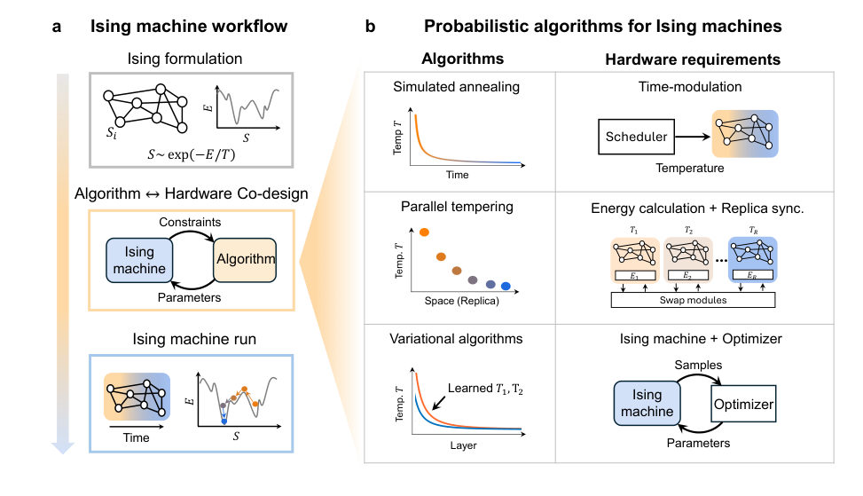
<figcaption class="paper-figure-caption"><b>Fig 1.</b> Figure 1: Ising machine workflow and probabilistic algorithm-hardware co-design. (a) Top: an optimization or sampling task is encoded as an Ising problem with energy E and Boltzmann distribu- tion S ∼exp(−E/T) with T the temperature parameter. Middle: the algorithm and Ising machine co-design loop, where algorithmic demands set hardware parameters and hardware constraints shape al- gorithm choice. Bottom: the Ising machine explores the energy landscape over time and returns samples S. (b) Three families of probabilistic algorithms surveyed in this Review, paired with their hardware requirements. Simulated annealing requires time-modulation of temperature via a scheduler. Paral- lel...</figcaption>
</figure>
<figure class="paper-figure-card">
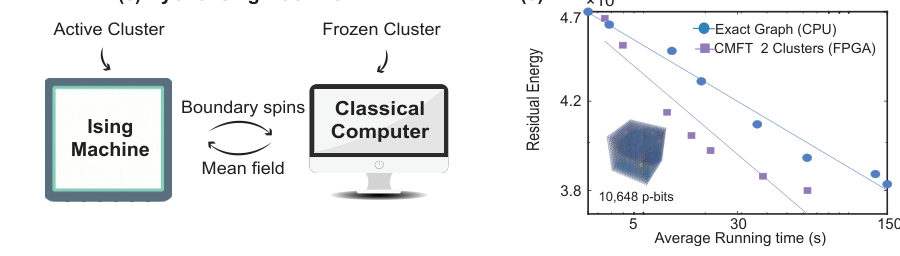
<figcaption class="paper-figure-caption"><b>Fig 2.</b> Figure 2: Cluster mean-field theory for hardware capacity scaling. (a) An original interaction graph whose size exceeds the capacity of a single Ising-machine chip. (b) Balanced partitioning of the graph into clusters sized to fit within hardware limits. (c) Serial CMFT workflow: the active cluster is updated on the Ising machine while remaining clusters stay frozen. Boundary interactions are approximated by mean-field values computed on a classical processor. (d) CPU results for L = 6 (216 spins): residual energy versus Monte Carlo sweeps for different cluster counts (100 instances, 20 runs). Fewer clusters yield steeper power-law decay, where κ denotes the log–log slope (exact graph: κ =...</figcaption>
</figure>
<figure class="paper-figure-card">
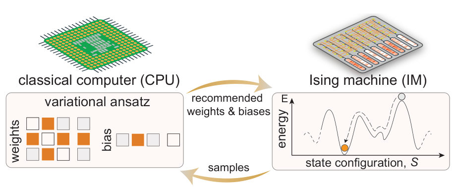
<figcaption class="paper-figure-caption"><b>Fig 3.</b> Figure 3: Overview of PAOA. A classical processor (left) evaluates a cost function using independent samples returned by an Ising machine or probabilistic sampler (right). The resulting objective is used to update variational parameters, such as effective couplings, fields, or annealing schedules, that define the stochastic dynamics for the next layer. Repeating this sample-and-update loop produces a learned non-equilibrium trajectory. In the illustrated ansatz, an M × M weight matrix and M × 1 bias vector parameterize the sampling distribution over N problem spins, where M ≥N.</figcaption>
</figure>
<figure class="paper-figure-card">
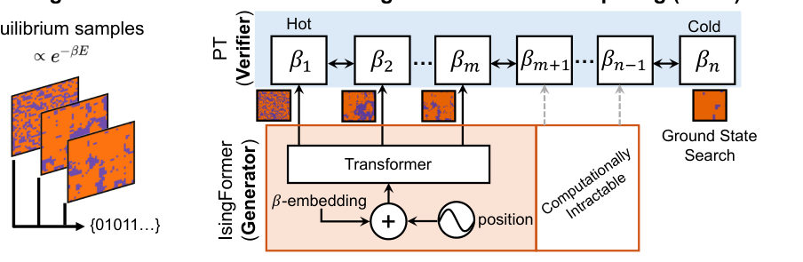
<figcaption class="paper-figure-caption"><b>Fig 4.</b> Figure 4: Synergies between generative AI and Ising machines. Left: Equilibrium samples collected from MCMC chains after burn-in serve as training data for a generative model. In this setup, a decoder- only Transformer (IsingFormer) is trained to produce equilibrium-like samples in fewer steps, effectively bypassing mixing times. Right: A Generator-Verifier scheme employing Transformer-Augmented Par- allel Tempering (TAPT). Conditioned on the inverse temperature β, the IsingFormer acts as a generator to accelerate PT exploration via global moves along the temperature ladder. PT functions as a verifier, accepting or rejecting moves based on a Metropolis criterion to enforce detailed balance....</figcaption>
</figure>
</div>

<p><strong>Summary.</strong> This review surveys probabilistic algorithms for Ising machines, advocating for a top-down, principled approach to ensure provable guarantees. It details methods ranging from Simulated Annealing to advanced generative AI integrations, positioning Ising computing at a critical co-evolutionary point with hardware. The work provides a framework for accelerating the use of these powerful, yet complex, computational platforms.</p>
<p><strong>Why it may be interesting.</strong> The focus on co-design, where algorithmic demands shape hardware, is highly relevant as it suggests new avenues for simulating complex, non-equilibrium dynamics using programmable classical hardware.</p>
<details>
<summary>Detailed structure</summary>
<p><strong>Main problem.</strong> The paper addresses the need for portable and provably guaranteed probabilistic algorithms for Ising machines, bridging the gap between optimization problems and generative AI.</p>
<p><strong>Main result.</strong> It proposes a co-design framework where advanced probabilistic algorithms, like PAOA, can accelerate the capabilities and adoption of next-generation Ising hardware.</p>
<p><strong>Method.</strong> The review surveys and synthesizes multiple algorithmic approaches, including Simulated Annealing, Parallel Tempering, and generative model integration, all applied to the Ising Hamiltonian.</p>
<p><strong>Model / system.</strong> The core model is the Ising machine, governed by the Ising Hamiltonian, which is used to encode intractable combinatorial optimization and sampling problems. The system can be generalized to include higher-order interactions and multi-state variables.</p>
<p><strong>Key observables.</strong> The primary observable is the ability to sample from a prescribed probability distribution, crucial for tasks like Bayesian inference and generative model training.</p>
<p><strong>Important parameters / regimes.</strong> Key parameters include the inverse temperature ($eta$), constraint penalty strengths, and the number of replicas used in advanced sampling techniques.</p>
<p><strong>Assumptions / limitations.</strong> The review contrasts physics-driven methods lacking formal guarantees with MCMC-based approaches that provide necessary convergence guarantees.</p>
<p><strong>Figures summary.</strong> Figure 1 illustrates the Ising machine workflow and the co-design loop, mapping tasks to energy functions and pairing algorithm families with hardware requirements.</p>
<p><strong>Paper structure.</strong> The review progresses logically from foundational annealing methods to advanced techniques like Parallel Tempering, variational approaches, and finally explores the synergistic relationship between generative AI and Ising computing.</p>
</details>
<details>
<summary>Abstract</summary>
<p>Ising machines have emerged as promising hardware accelerators for intractable optimization and sampling problems, yet their practical impact increasingly hinges on the co-design of algorithms and hardware, where algorithmic demands shape new architectures and new hardware capabilities inspire entirely new algorithms. In this Review, we survey probabilistic algorithms designed for portability across diverse Ising platforms, advocating a top-down perspective that prioritizes principled methods with provable guarantees. We cover foundational methods such as simulated annealing and parallel tempering, including two-dimensional extensions that natively encode hard constraints, and examine approaches that expand the scale of solvable problems from cluster mean-field methods to variational samplers. We highlight the Probabilistic Approximate Optimization Algorithm (PAOA), a classical analog of QAOA that emerged directly from probabilistic hardware development, and explore how generative AI and Ising machines might reinforce each other: learned models propose global moves to accelerate optimization, while probabilistic techniques improve inference in large language models. Much as quantum computing has seen algorithms co-evolve with hardware, probabilistic and Ising computing stand at a similar inflection point. We outline a co-design framework for accelerating the capabilities and adoption of next-generation Ising machines.</p>
</details>
<p><sub><a href="#top">↑ back to top</a></sub></p>

<p><a id="paper-2610.05213"></a></p>
<h3 id="theory-of-the-edge-of-chaos-advantage-in-quantum-reservoir-computing"><a href="http://arxiv.org/abs/2610.05213v1">Theory of the Edge-of-Chaos Advantage in Quantum Reservoir Computing</a></h3>
<p><strong>Authors:</strong> Shuaifan Cao, Wei Xia, Xiaopeng Li<br>
<strong>Type:</strong> theory · <strong>Category:</strong> disordered systems and neural networks · <strong>PDF:</strong> <a href="https://arxiv.org/pdf/2610.05213v1">https://arxiv.org/pdf/2610.05213v1</a><br>
<strong>Analysis basis:</strong> full PDF text, analyzed in chunks
<strong>Topic relevance:</strong> <code>Keldysh / 2PI / non-Gaussian methods</code> <strong>1/5</strong> · <code>analog quantum simulation</code> <strong>1/5</strong></p>
<div class="figure-strip-hint">↔ Scroll figures horizontally</div>
<div class="paper-figures-scroll">
<figure class="paper-figure-card">
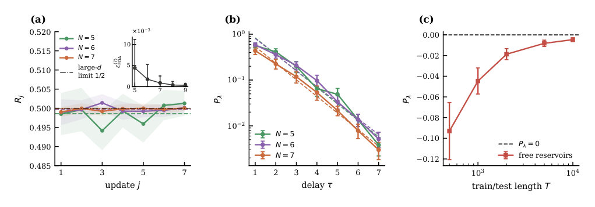
<figcaption class="paper-figure-caption"><b>Fig 1.</b> FIG. 1. Numerical tests of the theoretical predictions. (a) Finite-window test of the EDA. For two runs that differ in a single input, solid curves show direct finite-sample estimates of Rj = Ejoint∥∆j∥2 2/Ejoint∥∆j−1∥2 2 for GUE reservoirs of N = 5, 6, 7 qubits. Colored dashed lines show ¯qt,N, the estimate of ¯qt for a reservoir of N qubits, obtained from the same Hamiltonian samples. The black dash-dotted line marks the large-d limit 1/2. The inset shows ε(7) EDA,N = max1≤j≤7 |Rj,N −¯qt,N| for N = 5, . . . , 9. (b) Memory decay. Estimated performance Pλ for the delayed-memory task yk = uk−τ. Dashed curves are exponential fits over 1 ≤τ ≤7. (c) Free-reservoir obstruction. For five-qubit...</figcaption>
</figure>
<figure class="paper-figure-card">
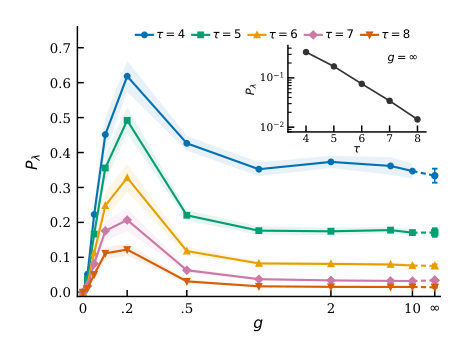
<figcaption class="paper-figure-caption"><b>Fig 2.</b> FIG. 2. Theory-guided tasks reveal an intermedi- ate performance peak. Stationary Pλ for yk = (uk − 1/2)(uk−τ −1/2) with 4 ≤τ ≤8. The readout uses the complete set of normalized quadratic observables. The hor- izontal axis is scaled as arctan g. Dashed terminal segments connect g = 10 to the separately evaluated limit g = ∞in the chaotic regime. The inset replots the g = ∞values on a logarithmic scale. Values are sample means over the same 30 independently drawn N = 6 mixed SYK2 + SYK4 Hamilto- nian pairs at t = 2 and λ ≃1.56 × 10−6. Shading and error bars show 95% confidence intervals for the ensemble mean.</figcaption>
</figure>
</div>

<p><strong>Summary.</strong> This work provides a rigorous theoretical analysis of Quantum Reservoir Computing, demonstrating that optimal performance occurs at the 'edge of chaos.' The authors show that overly chaotic dynamics cause rapid memory loss, while perfectly integrable dynamics fail to capture necessary nonlinear correlations, thus pinpointing the theoretical basis for the observed advantage.</p>
<p><strong>Why it may be interesting.</strong> The connection between dynamical regimes (chaos vs. integrability) and computational capacity is central to modern quantum information theory, providing a theoretical framework for designing quantum machine learning hardware.</p>
<details>
<summary>Detailed structure</summary>
<p><strong>Main problem.</strong> The paper aims to theoretically understand the 'edge-of-chaos advantage' observed in Quantum Reservoir Computing (QRC) for processing temporal information.</p>
<p><strong>Main result.</strong> It establishes that the chaotic regime suffers from exponential memory decay, while the integrable regime fails to learn nonlinear tasks; the advantage arises from the intermediate 'edge of chaos' region.</p>
<p><strong>Method.</strong> The analysis uses rigorous theoretical bounds (like the Effective Decorrelation Approximation) and studies the system's behavior across a Hamiltonian interpolation between free-fermion and Gaussian Unitary Ensemble (GUE) limits.</p>
<p><strong>Model / system.</strong> The system is a quantum reservoir model evolving via unitary dynamics, analyzed using GUE Hamiltonians for the chaotic limit and free-fermion models for the integrable limit. The dynamics are controlled by interpolating Hamiltonians.</p>
<p><strong>Key observables.</strong> Learning performance ($P_\lambda$), memory retention factor ($R_j$), and the decay rate of performance with storage time ($    au$).</p>
<p><strong>Important parameters / regimes.</strong> The coupling strength parameter ($  heta$ or $g$) used to interpolate between the two extreme regimes, and the storage time ($ au$).</p>
<p><strong>Assumptions / limitations.</strong> The analysis relies on the Effective Decorrelation Approximation (EDA) and assumes i.i.d. uniform inputs on [0, 1] for numerical tests.</p>
<p><strong>Figures summary.</strong> Figures illustrate memory decay for delayed tasks, show the 'free-reservoir obstruction' approaching zero performance, and demonstrate an intermediate performance peak at intermediate coupling strengths.</p>
<p><strong>Paper structure.</strong> The paper progresses by first analyzing the memory loss in the chaotic GUE regime, then proving the inability of the free-fermion model to learn nonlinear tasks, and finally synthesizing these limitations to theoretically justify the optimal performance observed at the edge of chaos.</p>
</details>
<details>
<summary>Abstract</summary>
<p>Numerical studies suggest that quantum reservoir computing performs optimally near the edge of chaos, a behavior commonly attributed to a balance between memory retention and nonlinear information processing. Here we develop an explicit quantum reservoir model and rigorously analyze its chaotic regime and integrable point. In the chaotic regime, we show that Gaussian-unitary-ensemble statistics lead to rapid memory loss: learning performance decays exponentially with the storage time required by a temporal task. This decay limits the ability of chaotic reservoirs to learn long-range temporal dependencies. At the integrable point, described by a free-fermion model, we prove that amplitude encoding and a linear readout of fermionic two-point correlations cannot learn a representative class of nonlinear tasks coupling present and past inputs. Introducing interactions alleviates this obstruction. By identifying distinct limitations on memory retention in the chaotic regime and nonlinear processing at the integrable point, our analysis provides a theoretical basis for the observed edge-of-chaos advantage and guides the design of quantum reservoirs for temporal learning.</p>
</details>
<p><sub><a href="#top">↑ back to top</a></sub></p>

<p><a id="paper-2610.06364"></a></p>
<h3 id="adaptive-complete-quantum-search-with-unknown-number-of-solutions"><a href="http://arxiv.org/abs/2610.06364v1">Adaptive complete quantum search with unknown number of solutions</a></h3>
<p><strong>Authors:</strong> Raj Alexandru Guţoiu, Bogdan-Călin Ciobanu, Pantelimon George Popescu<br>
<strong>Type:</strong> theory · <strong>Category:</strong> quantum information and computing · <strong>PDF:</strong> <a href="https://arxiv.org/pdf/2610.06364v1">https://arxiv.org/pdf/2610.06364v1</a><br>
<strong>Analysis basis:</strong> full PDF text, analyzed in chunks
<strong>Topic relevance:</strong> <code>quantum measurements</code> <strong>1/5</strong></p>
<div class="figure-strip-hint">↔ Scroll figures horizontally</div>
<div class="paper-figures-scroll">
<figure class="paper-figure-card">
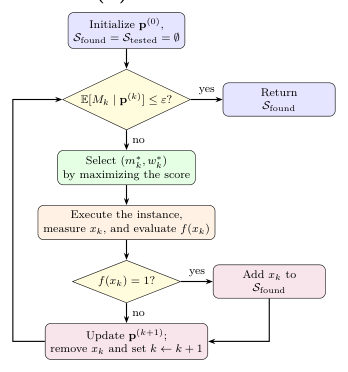
<figcaption class="paper-figure-caption"><b>Fig 1.</b> Figure 1: Two representations of the adaptive Bayesian complete quantum search: (a) pseudocode and (b) the corresponding flowchart. At every nonterminal state, the algorithm selects the searching instance that maximizes the greedy score, evaluates the measured candidate, and updates the posterior distribution.</figcaption>
</figure>
<figure class="paper-figure-card">
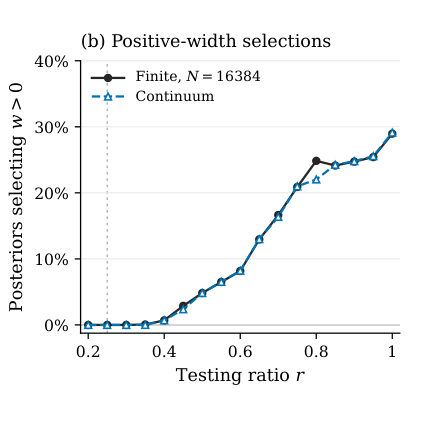
<figcaption class="paper-figure-caption"><b>Fig 2.</b> Figure 2: Selected widths in the finite N = 16384 and continuum trees through level 20, as a function of r: (a) the maximum selected width at each ratio; (b) the percentage of retained posterior records selecting w &gt; 0. Dashed vertical lines mark r = 1/4.</figcaption>
</figure>
<figure class="paper-figure-card">
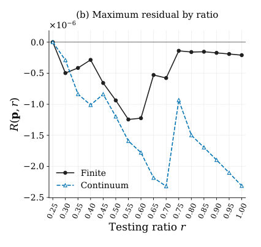
<figcaption class="paper-figure-caption"><b>Fig 3.</b> Figure 3: Residual of the maximum gap between the selected YLC and the optimal Grover score for the same posterior distribution obtained from the N = 16384 tree and the continuum tree through level 20: (a) as a function of the YLC depth m for fixed testing ratio r ∈{0.25, 0.5, 0.75, 1}; (b) as a function of the testing ratio r over all selected depths.</figcaption>
</figure>
<figure class="paper-figure-card">
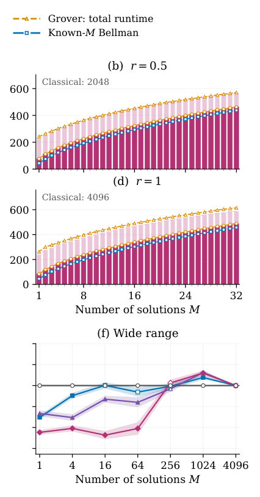
<figcaption class="paper-figure-caption"><b>Fig 4.</b> Figure 4: Complete-search performance at N = 4096, ε = 0.10: (a)-(d) YLC observed search expen- diture (saturated bars) and expenditure after full recovery (pale bars), with Grover search expenditure (solid) and total runtime (dashed); (e)-(f) paired YLC-minus-Grover total-runtime differences over sparse and wide counts. The Bellman curve gives the known-M discovery reference, and annotations give the classical cost rN. All costs use Qq + rQc and all 1024 trials. Shaded bands give pointwise 95% confidence intervals; filled markers in (e)-(f) indicate Holm-resolved differences.</figcaption>
</figure>
<figure class="paper-figure-card">
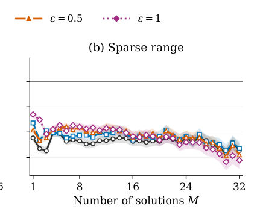
<figcaption class="paper-figure-caption"><b>Fig 5.</b> Figure 5: Paired runtime difference ∆T = TYLC −TGrover at N = 4096, r = 1 for ε ∈ {0.10, 0.25, 0.50, 1}: (a) wide solution counts on a logarithmic axis; (b) every M = 1, . . . , 32 on a linear axis. Negative values favor YLC. Shaded bands give pointwise 95% paired confidence intervals, including all 1024 trials.</figcaption>
</figure>
</div>

<p><strong>Summary.</strong> This paper develops an adaptive Bayesian framework to solve the difficult problem of finding all solutions in an unstructured database when the number of solutions is unknown. It analyzes the trade-offs between classical sampling, Grover search, and fixed-point quantum search based on a 'verification ratio' $r$. The results establish optimal search strategies and provide theoretical guarantees for the efficiency of these hybrid quantum algorithms.</p>
<p><strong>Why it may be interesting.</strong> The work provides rigorous theoretical bounds and optimal strategies for quantum search when the underlying problem structure (number of solutions) is unknown, which is a key area of quantum algorithm design.</p>
<details>
<summary>Detailed structure</summary>
<p><strong>Main problem.</strong> The paper addresses the fundamental challenge of finding all solutions in an unstructured database when the total number of solutions is unknown.</p>
<p><strong>Main result.</strong> An adaptive Bayesian approach is proposed that is proven to be asymptotically optimal for known solution numbers and provides clear thresholds for when hybrid classical/Grover approaches outperform fixed-point quantum search.</p>
<p><strong>Method.</strong> The methodology involves developing an adaptive policy that maximizes the expected success probability per unit execution time by dynamically choosing between classical sampling, Grover search, and generalized fixed-point quantum search.</p>
<p><strong>Model / system.</strong> The problem is modeled as an unstructured database search, utilizing quantum operators (oracle and diffuser) and incorporating Bayesian inference to update the probability distribution over the unknown number of solutions.</p>
<p><strong>Key observables.</strong> Expected success probability per unit time, posterior distribution over the number of solutions, and the verification ratio (r).</p>
<p><strong>Important parameters / regimes.</strong> The verification ratio $r$ (classical time / quantum iteration time), the number of solutions $M$, and the database size $N$.</p>
<p><strong>Assumptions / limitations.</strong> The cost model assumes oracle evaluation dominates the quantum iteration time, and the search terminates when the expected number of undiscovered solutions falls below a tolerance $\epsilon$.</p>
<p><strong>Figures summary.</strong> Figure 8 compares numerical counts against theoretical expressions for asymptotic results and shows the absolute relative difference decreasing as the testing ratio $r$ decreases.</p>
<p><strong>Paper structure.</strong> The paper analyzes the problem by unifying classical, Grover, and fixed-point quantum search instances into an adaptive Bayesian framework. It derives optimality proofs for specific regimes of the verification ratio $r$ and determines optimal transition points between search types.</p>
</details>
<details>
<summary>Abstract</summary>
<p>Unstructured database search is a fundamental problem that requires finding one or more elements satisfying a specific property within a set of candidates. While Grover's algorithm provides a quadratic speedup for finding a marked element when the number of solutions is known, finding all solutions when their number is unknown presents additional challenges. In this paper, we thoroughly analyze this problem by considering all the different regimes of combinations of classical, Grover and generalized fixed-point quantum search instances. We unify these into an adaptive Bayesian approach that maximizes the expected success probability per unit execution time at each searching instance. For a problem with a known number of solutions, much lower than the database size, we prove that our proposed approach is asymptotically optimal within the considered search model. Furthermore, we prove that for any probability distribution characterizing the likely number of solutions, in regimes where the classical verification time is at most 25% of the quantum amplitude amplification time, hybrid classical and Grover approaches are preferred to generalized fixed-point. Outside of this regime, we derive an upper bound on the maximal improvement achievable by fixed-point search compared to the best Grover-based score. Additionally, we determine the optimal transition point between classical sampling and quantum searching using an integral approximation of the probability distribution of the number of solutions. The analytical results are also supported by numerical simulations of the proposed algorithm and by comparisons between the generalized fixed-point and Grover-based search policies.</p>
</details>
<p><sub><a href="#top">↑ back to top</a></sub></p>

<p><a id="paper-2610.06131"></a></p>
<h3 id="an-textitab-initio-based-compact-analytical-formula-for-inelastic-x-ray-scattering-from-spatially-localized-excitons"><a href="http://arxiv.org/abs/2610.06131v1">An \textit{ab initio} based compact analytical formula for inelastic x-ray scattering from spatially localized excitons</a></h3>
<p><strong>Authors:</strong> Joris Sturm, Duc Anh Truong, Andrei Benediktovitch, Nina Rohringer, Andreas Knorr$^{1}$<br>
<strong>Type:</strong> both · <strong>Category:</strong> other · <strong>PDF:</strong> <a href="https://arxiv.org/pdf/2610.06131v1">https://arxiv.org/pdf/2610.06131v1</a><br>
<strong>Analysis basis:</strong> full PDF text, analyzed in chunks
<strong>Topic relevance:</strong> <code>Keldysh / 2PI / non-Gaussian methods</code> <strong>1/5</strong></p>
<div class="figure-strip-hint">↔ Scroll figures horizontally</div>
<div class="paper-figures-scroll">
<figure class="paper-figure-card">
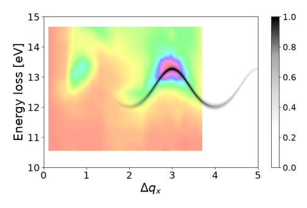
<figcaption class="paper-figure-caption"><b>Fig 1.</b> FIG. 1: Normalized inelastic scattering spectrum of the exciton contribution in LiF using an analytical tight-binding approach. The adapted experimental data from Ref. [3](Copyright (2008) National Academy of Sciences, U.S.A.) are shown in the background with the calculated spectrum overlaid for comparison.</figcaption>
</figure>
<figure class="paper-figure-card">
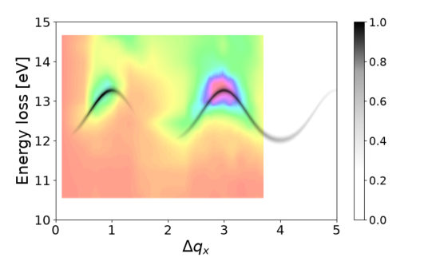
<figcaption class="paper-figure-caption"><b>Fig 2.</b> FIG. 2: Normalized inelastic scattering spectrum of the exciton contribution in LiF using maximally localized Wannier functions. The adapted experimental data from Ref. [3](Copyright (2008) National Academy of Sciences, U.S.A.) are shown in the background with the calculated spectrum overlaid for comparison.</figcaption>
</figure>
<figure class="paper-figure-card">

<figcaption class="paper-figure-caption"><b>Fig 3.</b> Fig. 2 shows the inelastic scattering spectrum which is calculated using MLWFs from first principles method that is in excellent agreement with other DFT-based theoretical results present in the literature [32, 33]. Similar to Fig. 1 we show the experimental data (colored) in the background to provide a direct comparison to the theoretical results. It is evident, that by employing the MLWF approach, in contrast to the tight-binding approach (Fig. 1) we now also obtain spectral features at lower momentum transfer centered around ∆qx = 0.8. A comparison to the experimental data</figcaption>
</figure>
</div>

<p><strong>Summary.</strong> This work develops a compact analytical model to calculate the inelastic x-ray scattering spectrum arising from excitons in materials like LiF. By comparing theoretical approaches—specifically ab initio MLWF versus simpler LCAO methods—the authors demonstrate that the accuracy of the calculated spectrum critically depends on the detailed description of the underlying electronic wave functions. This provides a vital theoretical tool for interpreting high-resolution spectroscopic measurements of excitonic excitations.</p>
<p><strong>Why it may be interesting.</strong> The rigorous connection between advanced many-body theory (BSE) and measurable spectroscopic techniques (IXS) provides a powerful tool for characterizing quasiparticle excitations in solids, which is relevant to understanding strongly correlated or excitonic physics.</p>
<details>
<summary>Detailed structure</summary>
<p><strong>Main problem.</strong> The paper aims to provide a compact analytical formula for describing inelastic x-ray scattering (IXS) from spatially localized excitons.</p>
<p><strong>Main result.</strong> The derived formulas show that the choice of wave function description—specifically comparing tight-binding (LCAO) versus ab initio (MLWF) methods—is crucial, with MLWF yielding superior agreement with experimental data for the exciton spectrum.</p>
<p><strong>Method.</strong> The theoretical framework combines analytical theory with first-principles calculations (DFT/BSE) to model the scattering cross-section, comparing localized and extended exciton contributions.</p>
<p><strong>Model / system.</strong> The system studied is the insulator Lithium Fluoride (LiF), focusing on excitons (electron-hole pairs). The theory models the scattering spectrum $S(\Delta q, \omega)$ using excitonic basis sets derived from Bloch states and Wannier functions.</p>
<p><strong>Key observables.</strong> The inelastic x-ray scattering spectrum $S(\Delta q, \omega)$, the excitonic dispersion $\Omega_
u(\Delta q)$, and the transition element $M_{
u,v,c}(\Delta q)$.</p>
<p><strong>Important parameters / regimes.</strong> Momentum transfer ($\Delta q$), energy loss ($\omega$), and the distinction between localized ($R_n=0$) and extended ($R_n 
eq 0$) exciton regimes.</p>
<p><strong>Assumptions / limitations.</strong> The localized case assumes the contribution from non-vanishing lattice vectors ($R_n 
eq 0$) is a small perturbation, and both limiting cases only consider optically active $s$-like excitonic states.</p>
<p><strong>Figures summary.</strong> The figures compare the predicted IXS spectra using LCAO vs. MLWF approaches, showing MLWF's better agreement with experimental data, especially at low momentum transfer.</p>
<p><strong>Paper structure.</strong> The paper develops the theoretical framework by relating the spectrum to correlation functions, deriving separate formulas for localized and extended excitons, and then validates these formulas by applying them to LiF using both LCAO and ab initio (MLWF) calculations.</p>
</details>
<details>
<summary>Abstract</summary>
<p>In this contribution we provide a compact model for the description of inelastic x-ray scattering of spatially localized excitons. We combine our analytical theory with first principles calculations and apply it to the material lithium fluoride (LiF). A comparison of two different approaches for the underlying single-particle wave functions to calculate the spectrum yield a qualitatively good agreement with experimental data but also shows that a detailed description of the wave functions is essential to obtain qualitative results.</p>
</details>
<p><sub><a href="#top">↑ back to top</a></sub></p>

<p><a id="paper-2610.04995"></a></p>
<h3 id="blind-remote-implementation-of-arbitrary-two-qubit-unitary-operation-via-pre-shared-entanglement"><a href="http://arxiv.org/abs/2610.04995v1">Blind Remote Implementation of Arbitrary Two-Qubit Unitary Operation via Pre-Shared Entanglement</a></h3>
<p><strong>Authors:</strong> Plaban Saha, Binayak S. Choudhury<br>
<strong>Type:</strong> theory · <strong>Category:</strong> quantum information and computing · <strong>PDF:</strong> <a href="https://arxiv.org/pdf/2610.04995v1">https://arxiv.org/pdf/2610.04995v1</a><br>
<strong>Analysis basis:</strong> full PDF text, analyzed in chunks
<strong>Topic relevance:</strong> <code>quantum measurements</code> <strong>1/5</strong></p>
<div class="figure-strip-hint">↔ Scroll figures horizontally</div>
<div class="paper-figures-scroll">
<figure class="paper-figure-card">
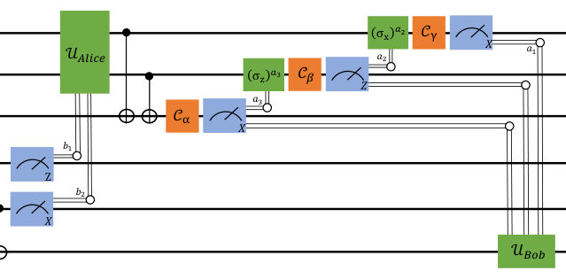
<figcaption class="paper-figure-caption"><b>Fig 1.</b> Figure 1: Quantum circuit for the remote implementation of the single-qubit unitary U = Rz(γ)Rx(β)Rz(α). The unknown state |ϕ⟩B remains at Bob’s side throughout the protocol, while Alice implements the required operations through the black-box devices Cα, Cβ, and Cγ.</figcaption>
</figure>
<figure class="paper-figure-card">
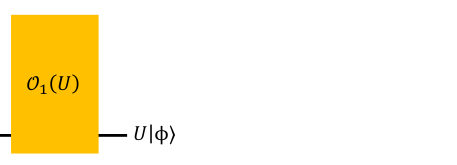
<figcaption class="paper-figure-caption"><b>Fig 2.</b> Figure 2: Effective operation block O1(U) for the remote implementation of the single-qubit unitary U = Rz(γ)Rx(β)Rz(α) on Bob’s unknown target qubit.</figcaption>
</figure>
<figure class="paper-figure-card">
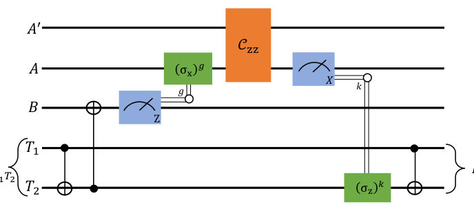
<figcaption class="paper-figure-caption"><b>Fig 3.</b> Figure 3: Quantum circuit for the remote implementation of Rzz(θ). Bob’s unknown two-qubit state |ψ⟩T1T2 remains at his side throughout the protocol.</figcaption>
</figure>
<figure class="paper-figure-card">
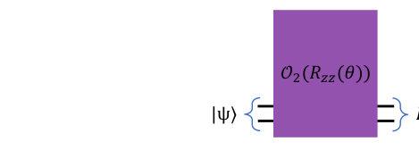
<figcaption class="paper-figure-caption"><b>Fig 4.</b> Figure 4: Effective operation block O2(Rzz(θ)) representing the complete remote implementation of the two-qubit unitary Rzz(θ) on Bob’s unknown target qubits.</figcaption>
</figure>
<figure class="paper-figure-card">
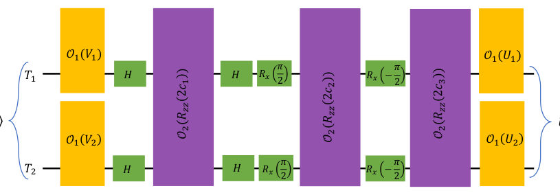
<figcaption class="paper-figure-caption"><b>Fig 5.</b> Figure 5: Compact quantum-circuit representation of the remote implementation of an arbi- trary two-qubit unitary operation U. The blocks O1 and O2 represent the complete remote- implementation protocols for arbitrary single-qubit unitaries and Rzz-type two-qubit operations, respectively. The required Rxx and Ryy operations are obtained through the corresponding local conjugations.</figcaption>
</figure>
</div>

<p><strong>Summary.</strong> This paper presents a protocol for the blind remote implementation of any arbitrary two-qubit unitary operation using only pre-shared entanglement. It achieves this by decomposing the target unitary into elementary single-qubit and two-qubit rotation components. The result is significant for quantum networking as it allows computation on a distant state without the local operator parameters being known to the controlling party.</p>
<p><strong>Why it may be interesting.</strong> This work provides a fundamental resource-efficient protocol for quantum computation, demonstrating how complex operations can be achieved remotely using only entanglement and local, unknown operations, which is crucial for distributed quantum computing architectures.</p>
<details>
<summary>Detailed structure</summary>
<p><strong>Main problem.</strong> The paper addresses the challenge of remotely implementing an arbitrary two-qubit unitary operation on a distant, unknown quantum state.</p>
<p><strong>Main result.</strong> A comprehensive protocol is established to realize any $U \in U(4)$ on Bob's state using only pre-shared entanglement and local operations performed by Alice using black-box devices.</p>
<p><strong>Method.</strong> The protocol decomposes the target unitary using the Cartan decomposition and builds the implementation sequentially by combining established protocols for single-qubit and two-qubit rotations.</p>
<p><strong>Model / system.</strong> The system involves two target qubits ($T1, T2$) whose state is unknown to Alice. The process relies on quantum communication primitives, specifically pre-shared Bell states, and the use of calibrated black-box quantum gates.</p>
<p><strong>Key observables.</strong> The final state transformation of the target qubits, $|\xi
angle_{T1T2} 
ightarrow U |\xi
angle_{T1T2}$.</p>
<p><strong>Important parameters / regimes.</strong> The parameters defining the unitary decomposition (e.g., $\alpha, eta, \gamma$ for single-qubit gates; $ heta$ for $R_{zz}(	heta)$).</p>
<p><strong>Assumptions / limitations.</strong> The protocol assumes the availability of pre-shared entanglement (Bell states) and that Alice has access to calibrated black-box devices corresponding to the elementary gates in the decomposition.</p>
<p><strong>Figures summary.</strong> Figures illustrate the quantum circuits for the remote implementation of single-qubit unitaries ($U = R_z(\gamma)R_x(eta)R_z(\alpha)$) and the two-qubit rotation $R_{zz}(	heta)$, culminating in a circuit showing the full sequence for arbitrary $U$.</p>
<p><strong>Paper structure.</strong> The paper first details the remote implementation of single-qubit unitaries using Euler decomposition, followed by the protocol for $R_{zz}(	heta)$ using a single Bell state. Finally, it combines these elementary protocols sequentially to realize the full two-qubit unitary via the Cartan decomposition.</p>
</details>
<details>
<summary>Abstract</summary>
<p>We propose a protocol for the remote implementation of an arbitrary two-qubit unitary operation using pre-shared entanglement. In our protocol, Bob possesses an unknown two-qubit state, while Alice implements the required operations using calibrated black-box devices. Alice does not need to know the parameters of these operations, and Bob's unknown state never leaves his laboratory. The protocol is based on the Euler decomposition of single-qubit unitary operations and the Cartan decomposition of two-qubit unitary operations. First, we construct protocols for the remote implementation of the single-qubit operation $U = R_z(γ)R_x(β)R_z(α)$ using pre-shared Bell states. We then construct a protocol for the two-qubit operation $R_{zz}(θ)$ using a single pre-shared Bell state and extend it to $R_{xx}(θ)$ and $R_{yy}(θ)$ through local unitary transformations. These elementary protocols are finally combined to implement an arbitrary two-qubit unitary operation. A third party, Charlie, determines the required decomposition and provides Alice with the corresponding black-box devices before the protocol begins. Thus, neither Alice nor Bob requires the classical description of the unitary operation.</p>
</details>
<p><sub><a href="#top">↑ back to top</a></sub></p>

<p><a id="paper-2610.06519"></a></p>
<h3 id="causal-memory-and-structural-complexity-of-a-quantum-space-series"><a href="http://arxiv.org/abs/2610.06519v1">Causal memory and structural complexity of a quantum space series</a></h3>
<p><strong>Authors:</strong> Thomas J. Elliott<br>
<strong>Type:</strong> theory · <strong>Category:</strong> statistical mechanics · <strong>PDF:</strong> <a href="https://arxiv.org/pdf/2610.06519v1">https://arxiv.org/pdf/2610.06519v1</a><br>
<strong>Analysis basis:</strong> full PDF text, analyzed in chunks
<strong>Topic relevance:</strong> <code>methods for driven-dissipative</code> <strong>1/5</strong></p>
<div class="figure-strip-hint">↔ Scroll figures horizontally</div>
<div class="paper-figures-scroll">
<figure class="paper-figure-card">
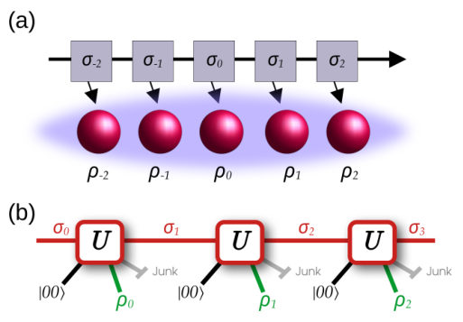
<figcaption class="paper-figure-caption"><b>Fig 1.</b> FIG. 1. Quantum space series. (a) A quantum space series ←→ ρ consists of a one-dimensional array of spatially-correlated quantum systems, emitted by the time-invariant evolution of a persistent memory system σ. (b) This evolution can be rep- resented by a unitary evolution U acting on the memory and two blank ancillae at each timestep, with one of the resulting ancillae becoming the space series output for that timestep, and the other containing ‘junk’ that is discarded into the en- vironment.</figcaption>
</figure>
<figure class="paper-figure-card">
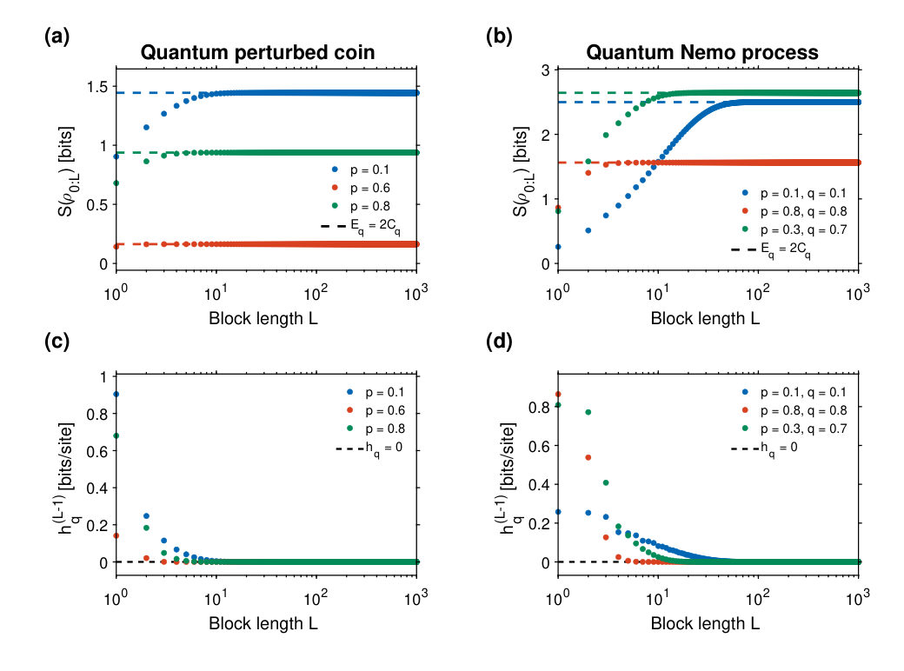
<figcaption class="paper-figure-caption"><b>Fig 2.</b> FIG. 2. Examples. (a,b) Growth of quantum block entropy with increasing sequence length for the quantum perturbed coin and quantum Nemo processes at various parameter values, all showing convergence to the excess quantum entropy. (c,d) Analogous plots for the myopic fundamental entropy rate, all showing convergence to hq = 0.</figcaption>
</figure>
</div>

<p><strong>Summary.</strong> This paper establishes an operational framework to quantify the complexity of quantum processes by defining it in terms of the minimum memory required for their causal generation. It shows that for a specific class of quantum systems, this minimum memory is quantitatively equal to the entanglement entropy across the past-future cut. This deepens the understanding of entanglement by giving it a concrete role as the irreducible memory resource governing quantum structure.</p>
<p><strong>Why it may be interesting.</strong> This work provides a rigorous, information-theoretic measure of complexity for open quantum systems, directly linking fundamental concepts like entanglement and memory in a way that is highly relevant to understanding quantum dynamics and correlations in many-body physics.</p>
<details>
<summary>Detailed structure</summary>
<p><strong>Main problem.</strong> To develop an operational framework to quantify the intrinsic structural complexity of quantum processes by measuring the minimum memory required for their causal generation.</p>
<p><strong>Main result.</strong> The quantum statistical complexity of the process is shown to be precisely equal to the entanglement entropy across the past-future bipartition, providing an operational meaning to entanglement as irreducible memory.</p>
<p><strong>Method.</strong> The authors extend classical complexity science to quantum systems by analyzing quantum space series using a fully-quantum extension of computational mechanics and matrix product state representations.</p>
<p><strong>Model / system.</strong> The focus is on stationary, memoryful quantum space series, modeled as sequences of quantum outputs generated by a memory system undergoing time-invariant unitary evolution.</p>
<p><strong>Key observables.</strong> Memory dimension, minimum memory entropy, entanglement entropy (across past-future cut), fundamental entropy rate, and causal asymmetry.</p>
<p><strong>Important parameters / regimes.</strong> Stationarity, finite-dimensional primitive causal models, and the structure of the memory channel $\Lambda_q$.</p>
<p><strong>Assumptions / limitations.</strong> The analysis is restricted to quantum space series that admit finite-dimensional, primitive causal models, and the process is assumed to be stationary.</p>
<p><strong>Figures summary.</strong> Figure 1 illustrates a quantum space series as a one-dimensional array of spatially-correlated quantum systems emitted by a memory system, with the evolution represented by a unitary operator.</p>
<p><strong>Paper structure.</strong> The paper builds from defining the problem (operational complexity via memory) to formalizing the quantum system (quantum space series, unitary evolution) and deriving key mathematical results linking memory bounds, entanglement entropy, and the resulting canonical matrix product state representation.</p>
</details>
<details>
<summary>Abstract</summary>
<p>What makes one quantum process more complex than another? We adopt an operational approach inspired by classical complexity science, which characterises structure through the memory required for causal generation. We develop a fully-quantum extension of computational mechanics for quantum space series: Sequences of quantum outputs that do not return to interact with their generator. For stationary, memoryful quantum space series admitting finite-dimensional, primitive causal models, we show that a memory-minimal model can be chosen to generate the outputs isometrically, without a discarded environment. The resulting canonical matrix product state representation determines both the minimum memory dimension and the minimum memory entropy. The latter is precisely the entanglement entropy across the past-future bipartition, giving entanglement an operational interpretation as irreducible memory for causal generation. Within this class, we further establish a vanishing fundamental entropy rate, the absence of causal asymmetry, and infinite quantum Markov order. These results establish an operational framework for quantifying intrinsic quantum structure, revealing deep connections between causal generation, complexity, memory, entropy, and entanglement.</p>
</details>
<p><sub><a href="#top">↑ back to top</a></sub></p>

<p><a id="paper-2610.05304"></a></p>
<h3 id="demonstration-of-a-structured-agentic-workflow-for-applied-quantum-computing-research"><a href="http://arxiv.org/abs/2610.05304v1">Demonstration of a Structured Agentic Workflow for Applied Quantum Computing Research</a></h3>
<p><strong>Authors:</strong> Dikshant Dulal, Maxence Grandadam, Maciej Koch-Janusz, Mykola Maksymenko<br>
<strong>Type:</strong> theory · <strong>Category:</strong> quantum information and computing · <strong>PDF:</strong> <a href="https://arxiv.org/pdf/2610.05304v1">https://arxiv.org/pdf/2610.05304v1</a><br>
<strong>Analysis basis:</strong> full PDF text, analyzed in chunks
<strong>Topic relevance:</strong> <code>quantum measurements</code> <strong>1/5</strong></p>
<div class="figure-strip-hint">↔ Scroll figures horizontally</div>
<div class="paper-figures-scroll">
<figure class="paper-figure-card">
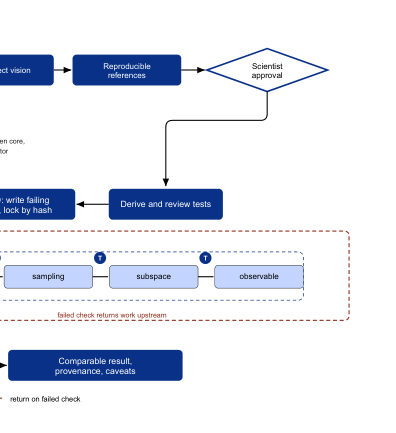
<figcaption class="paper-figure-caption"><b>Fig 1.</b> Figure 1: Schematic view of the Quantum Agentic OS workflow used in this demonstration. Research and evidence stages (dark) generate a formalization, define a build protocol, and specify reference results to reproduce, which are human-approved. Test-driven implementation converts the protocol into immutable tests before coding. The implementation nodes (light) are guarded at each interface by the tests. Execution validates the interfaces and the run record, and a failed check returns work to the relevant upstream stage. Node labels and arrows remain legible in grayscale.</figcaption>
</figure>
<figure class="paper-figure-card">

<figcaption class="paper-figure-caption"><b>Fig 2.</b> Figure 2: Left: Potential-energy profiles produced by the QAOS-guided protocol. FCI is exact within the STO-3G space; the quantum SQD method recovers the energy barrier to within 20 meV. Right: Five baseline FCI attempts using the standard Claude Code harness with the same Sonnet 5 model as QAOS. The baseline agents demonstrated large variability, breaking the brief by choosing different electronic subspaces and geometries, committing critical mistakes before even reaching the quantum algorithm stage. Legend labels identify each method for color and grayscale print.</figcaption>
</figure>
<figure class="paper-figure-card">

<figcaption class="paper-figure-caption"><b>Fig 3.</b> Figure 3: Project graph for the proton-transfer demonstration as shown in the Quantum Agentic OS interface. Each node is a multi-agent module. Edges show the controlled flow of context used to assemble the experiment.</figcaption>
</figure>
<figure class="paper-figure-card">

<figcaption class="paper-figure-caption"><b>Fig 4.</b> Figure 3 shows the project graph of nodes for the proton-transfer demonstration, as displayed in the Quantum Agentic OS interface. As in Section 2, each node is a multi-agent module in itself (or a local input folder attached to the graph). Edges indicate which completed outputs become available as context to later stages. Figure 1 is the schematic of the same organization. This appendix figure is the concrete graph used for the case study.</figcaption>
</figure>
<figure class="paper-figure-card">

<figcaption class="paper-figure-caption"><b>Fig 5.</b> Figure 4: Geometry used for the proton-transfer scan. The oxygen–oxygen separation is fixed to 2.9 Å, and the shared proton is displaced along the O–O axis according to the reaction coordinate δ. The symmetric configuration lies near the center of the scan, while displacement toward either oxygen produces the two proton-localized sides of the potential-energy profile. We overlay a schematic of the potential energy as a function of δ, not to scale.</figcaption>
</figure>
</div>

<p><strong>Summary.</strong> This paper introduces the Quantum Agentic Operating System (QAOS), a structured framework designed to manage the complexity of applied quantum computing research. It demonstrates QAOS by successfully calculating the proton transfer barrier for a model system, achieving results consistent with exact quantum chemistry benchmarks. The work highlights that structured, verifiable workflows are crucial for reliable quantum R&amp;D, far surpassing the capabilities of unconstrained AI agents.</p>
<p><strong>Why it may be interesting.</strong> The paper's focus on structuring the <em>process</em> of quantum algorithm development—managing context, enforcing constraints, and verifying steps—is highly relevant for researchers building complex quantum simulation pipelines.</p>
<details>
<summary>Detailed structure</summary>
<p><strong>Main problem.</strong> To address the complexity of applied quantum computing research, the authors introduce a structured agentic workflow system.</p>
<p><strong>Main result.</strong> The proposed Quantum Agentic Operating System (QAOS) successfully guides a quantum chemistry calculation, yielding results consistent with high-level theory (FCI) and significantly outperforming baseline, unstructured LLM attempts.</p>
<p><strong>Method.</strong> The core methodology is the QAOS, a structured, multi-agent workflow graph that decomposes complex research into sandboxed, verifiable tasks, contrasting with simple, single-prompt agent execution.</p>
<p><strong>Model / system.</strong> The demonstration uses the Zundel cation ($ ext{H}_5    ext{O}^+$) as a minimal model for proton transfer, requiring the calculation of the electronic ground-state energy via various methods.</p>
<p><strong>Key observables.</strong> The energy barrier for proton transfer ($\Delta E_{	ext{barrier}}$) along the reaction coordinate ($\delta$).</p>
<p><strong>Important parameters / regimes.</strong> Fixed inter-oxygen distance ($d = 2.9 	ext{ Å}$); minimal basis set (STO-3G); 20 electrons in 15 orbitals.</p>
<p><strong>Assumptions / limitations.</strong> The calculation is performed within the Born-Oppenheimer approximation, and the authors deliberately avoid active-space approximations for direct solver comparison.</p>
<p><strong>Figures summary.</strong> Figure 2 compares potential-energy profiles for proton transfer using different electronic structure methods (SQD vs. exact FCI), showing the superior accuracy and consistency of the QAOS-guided approach compared to baseline LLM attempts.</p>
<p><strong>Paper structure.</strong> The paper introduces the QAOS framework, demonstrates its application to a quantum chemistry prototyping task (proton transfer), compares its structured output against baseline agents, and validates the process using established quantum chemistry benchmarks.</p>
</details>
<details>
<summary>Abstract</summary>
<p>Quantum hardware advances now make it practical to explore quantum approaches to scientific problems. Applied quantum computing research sits at the intersection of domain knowledge, algorithms, theoretical physics, device physics, and quantum and classical computational methods. The breadth of expertise required and the inherent project complexity challenge not only any individual researcher, but also generic AI systems. Here, we introduce the Quantum Agentic Operating System (QAOS), a structured agentic research system designed to address this challenge for quantum and computational R&amp;D projects. QAOS is built around a nonlinear workflow graph of heterogeneous multi-agent nodes, with a controlled flow of context and computational resources. It decomposes a complex research project into sandboxed multi-agent tasks executed under constraints from the project graph, task-relevant methodologies, and necessary verification steps. We demonstrate QAOS on a quantum chemistry prototyping task, in which it is asked to set up a minimal model for a proton-transfer problem and to implement its solution using sample-based quantum diagonalization (SQD), together with classical reference methods such as FCI (exact diagonalization) and density functional theory (DFT). We compare the QAOS solution to those obtained with baseline agents (Claude Sonnet 5 with the Claude Code harness). In contrast to QAOS, the baseline agents silently ignore explicit instructions, and the runs show large variability.</p>
</details>
<p><sub><a href="#top">↑ back to top</a></sub></p>

<p><a id="paper-2610.06568"></a></p>
<h3 id="dynamical-valence-fluctuations-and-magnetic-anisotropy-in-smcocumath1783math"><a href="http://arxiv.org/abs/2610.06568v1">Dynamical Valence Fluctuations and Magnetic Anisotropy in Sm(Co,Cu)$_5$</a></h3>
<p><strong>Authors:</strong> Alexander B. Shick, Alexander V. Andreev, Evgenia A. Tereshina-Chitrova, Institute of Physics, the Czech Academy of Sciences, Na Slovance 2, CZ-18221 Prague, Czech Republic<br>
<strong>Type:</strong> theory · <strong>Category:</strong> strongly correlated electrons · <strong>PDF:</strong> <a href="https://arxiv.org/pdf/2610.06568v1">https://arxiv.org/pdf/2610.06568v1</a><br>
<strong>Analysis basis:</strong> full PDF text, analyzed in chunks
<strong>Topic relevance:</strong> <code>Keldysh / 2PI / non-Gaussian methods</code> <strong>1/5</strong></p>
<div class="figure-strip-hint">↔ Scroll figures horizontally</div>
<div class="paper-figures-scroll">
<figure class="paper-figure-card">

<figcaption class="paper-figure-caption"><b>Fig 1.</b> FIG. 1. The hexagonal P6/mmm SmCo5 crystal structure.</figcaption>
</figure>
<figure class="paper-figure-card">

<figcaption class="paper-figure-caption"><b>Fig 2.</b> FIG. 2. Sm 4f-projected DOS and non-f itinerant DOS per unit cell for (A) SmCo5 together with experimental valence PES data [29], and (B) SmCu5 with experimental PES spec- trum of Sm/Cu films [30].</figcaption>
</figure>
</div>

<p><strong>Summary.</strong> This work uses advanced DFT+U(ED) calculations to study the magnetic properties of Sm(Co,Cu)5. It demonstrates that the magnetic anisotropy and moment structure are critically dependent on dynamic valence fluctuations in the Sm 4f shell. The findings provide a microscopic framework explaining how substituting Co with Cu alters the electronic state and magnetic behavior.</p>
<p><strong>Why it may be interesting.</strong> The explicit treatment of dynamical valence fluctuations using DFT+U(ED) provides a sophisticated many-body approach to correlated magnetism, which is highly relevant for understanding strongly correlated materials where simple mean-field theories fail.</p>
<details>
<summary>Detailed structure</summary>
<p><strong>Main problem.</strong> The paper investigates the magnetic properties and magnetic anisotropy of Sm-based intermetallics, focusing on the poorly understood role of dynamical 4f valence fluctuations.</p>
<p><strong>Main result.</strong> Dynamical 4f valence fluctuations are essential for explaining the contrasting magnetic properties between SmCo5 and SmCu5, leading to a quantitative description of the magnetic anisotropy.</p>
<p><strong>Method.</strong> The study employs self-consistent DFT+U(ED), which explicitly treats the dynamical fluctuations of the Sm 4f shell, comparing results against other DFT and DMFT approaches.</p>
<p><strong>Model / system.</strong> The physical systems are the intermetallic compounds SmCo5 and SmCu5. The model involves treating the localized 4f states coupled to the conduction electrons, incorporating valence fluctuations between Sm2+ and Sm3+ states.</p>
<p><strong>Key observables.</strong> Electronic structure, magnetic anisotropy (MAE), Sm spin/orbital/total magnetic moments, and the 4f occupation probabilities (e.g., P_f5, P_f6).</p>
<p><strong>Important parameters / regimes.</strong> The Co to Cu substitution ratio, which dictates the shift in the 4f configuration balance, and the strength of the hybridization between 4f and valence electrons.</p>
<p><strong>Assumptions / limitations.</strong> The primary approximation is the use of DFT+U(ED) to model the complex 4f correlations, which is an improvement over simpler DFT+U or Hubbard-I approximations.</p>
<p><strong>Figures summary.</strong> Figures likely show the Sm 4f-projected and total Density of States (DOS) for both compounds, comparing calculated results with experimental Photoemission Spectroscopy (PES) data.</p>
<p><strong>Paper structure.</strong> The paper proceeds by establishing the theoretical framework (DFT+U(ED)), applying it to SmCo5 to show valence fluctuations and moment compensation, then analyzing the effect of Co to Cu substitution in SmCu5, and finally concluding that these fluctuations govern the magnetic contrast.</p>
</details>
<details>
<summary>Abstract</summary>
<p>The magnetic properties of Sm-based intermetallics are governed by a delicate interplay between localized $4f$ states, exchange interactions, and valence fluctuations, yet the role of dynamical $4f$ correlations remains poorly understood. Here we investigate the electronic structure and magnetic anisotropy of SmCo$_5$ and SmCu$_5$ using self-consistent DFT+$U$(ED), which explicitly treats dynamical fluctuations of the Sm $4f$ shell. We find that SmCo$_5$ exhibits pronounced Sm$^{2+}$--Sm$^{3+}$ valence fluctuations, with the $4f$ ground state dominated by $f^5$ and $f^6$ configurations. The resulting dynamical $4f$ correlations yield near compensation of the Sm spin and orbital moments and provide a quantitative description of the electronic structure, magnetic moments, and large uniaxial magnetic anisotropy of SmCo$_5$. Upon replacing Co with Cu, the balance shifts toward the $f^6$ configuration, with substantial changes in the Sm spin and orbital moments. In SmCu$_5$, this evolution of the $4f$ configuration is accompanied by a pronounced reduction of both the total magnetic moment and magnetic anisotropy. These results demonstrate that dynamical $4f$ valence fluctuations are essential for understanding the contrasting magnetic properties of SmCo$_5$ and SmCu$_5$ and provide a microscopic framework for describing magnetic anisotropy upon Co to Cu substitution in Sm(Co,Cu)$_5$.</p>
</details>
<p><sub><a href="#top">↑ back to top</a></sub></p>

<p><a id="paper-2610.04597"></a></p>
<h3 id="efficient-quantum-state-identity-testing"><a href="http://arxiv.org/abs/2610.04597v1">Efficient Quantum State Identity Testing</a></h3>
<p><strong>Authors:</strong> Shih-Han Hung, Ming-Hsien Tsai<br>
<strong>Type:</strong> theory · <strong>Category:</strong> quantum information and computing · <strong>PDF:</strong> <a href="https://arxiv.org/pdf/2610.04597v1">https://arxiv.org/pdf/2610.04597v1</a><br>
<strong>Analysis basis:</strong> full PDF text, analyzed in chunks
<strong>Topic relevance:</strong> <code>quantum measurements</code> <strong>1/5</strong></p>
<div class="figure-strip-hint">↔ Scroll figures horizontally</div>
<div class="paper-figures-scroll">
<figure class="paper-figure-card">

<figcaption class="paper-figure-caption"><b>Fig 1.</b> Low-resolution page preview, page 2</figcaption>
</figure>
<figure class="paper-figure-card">

<figcaption class="paper-figure-caption"><b>Fig 2.</b> Low-resolution page preview, page 3</figcaption>
</figure>
<figure class="paper-figure-card">

<figcaption class="paper-figure-caption"><b>Fig 3.</b> Low-resolution page preview, page 4</figcaption>
</figure>
<figure class="paper-figure-card">

<figcaption class="paper-figure-caption"><b>Fig 4.</b> Low-resolution page preview, page 5</figcaption>
</figure>
<figure class="paper-figure-card">

<figcaption class="paper-figure-caption"><b>Fig 5.</b> Low-resolution page preview, page 6</figcaption>
</figure>
</div>

<p><strong>Summary.</strong> This paper tackles the Quantum State Identity Testing problem, which distinguishes between sets of quantum states that are all nearly identical versus those containing at least one significantly different pair. The authors develop two quantum algorithms, one optimized for circuit depth and another for sample complexity, and prove that the sample complexity achieved is optimal, setting a strong benchmark for quantum state verification protocols.</p>
<p><strong>Why it may be interesting.</strong> This work provides concrete, resource-efficient quantum algorithms for a fundamental task in quantum characterization, which is relevant for designing quantum protocols where state verification is necessary.</p>
<details>
<summary>Detailed structure</summary>
<p><strong>Main problem.</strong> The paper addresses the Quantum State Identity Testing (QSI) problem: determining if $n$ unknown pure quantum states are all highly similar (all pairs have fidelity $\ge 1-\epsilon$) or if at least one pair is significantly different (fidelity $\le \epsilon$).</p>
<p><strong>Main result.</strong> The authors present two quantum algorithms, one achieving constant circuit depth and another achieving sample-optimal complexity, establishing a matching lower bound for the required number of input state copies.</p>
<p><strong>Method.</strong> The techniques involve using parallel swap tests and employing the Schur transform combined with an analysis involving Jucys–Murphy elements to estimate the sum of pairwise fidelities.</p>
<p><strong>Model / system.</strong> The system involves $n$ unknown pure quantum states $|\psi_i
angle$ in a local dimension $d \ge 2$. The problem is framed as distinguishing between a 'yes' instance (all states are close) and a 'no' instance (at least one pair is far apart).</p>
<p><strong>Key observables.</strong> Fidelity between pairs of states, $    ext{fidelity}(|\psi_i
angle, |\psi_j
angle) = |\langle \psi_i | \psi_j 
angle|^2$, and the expectation values derived from the Jucys–Murphy operator.</p>
<p><strong>Important parameters / regimes.</strong> The overlap parameter $\epsilon \in (0, 1/4)$, the number of states $n$, and the failure probability $\delta$.</p>
<p><strong>Assumptions / limitations.</strong> The analysis is restricted to pure input states and the regime $0 < \epsilon < 1/4$.</p>
<p><strong>Figures summary.</strong> Not specified in the provided notes.</p>
<p><strong>Paper structure.</strong> The paper introduces the relaxed QSI problem, develops two distinct quantum algorithms (constant depth vs. sample-optimal), and concludes by proving a matching sample complexity lower bound using techniques related to hypothesis testing.</p>
</details>
<details>
<summary>Abstract</summary>
<p>We study the following quantum state identity problem: given access to copies of $n$ unknown pure quantum states, the goal is to determine whether every pair has fidelity at least $1-\varepsilon$ or some pair has fidelity at most $\varepsilon$. This problem relaxes the identical-or-orthogonal promise considered in previous work. For any fixed overlap parameter $\varepsilon\in(0,1/4)$, we present two quantum algorithms with complementary guarantees on circuit depth and sample complexity. The first runs in constant depth using parallel swap tests and takes $O(\log(n/δ)\log(2/δ))$ copies of each input state to succeed with probability at least $1-δ$. The second uses the Schur transform to reduce the sample complexity to $O(\log(n/δ))$, through an analysis relating Jucys--Murphy elements to Schur sampling. We also prove a matching sample complexity lower bound of $Ω(\log(n/δ))$ for any quantum algorithm with failure probability at most $δ\le 1/2-c$, for any constant $c>0$, establishing that the second algorithm achieves the optimal dependence on both $n$ and $δ$ for fixed $\varepsilon$.</p>
</details>
<p><sub><a href="#top">↑ back to top</a></sub></p>

<p><a id="paper-2610.06832"></a></p>
<h3 id="energy-constrained-two-way-capacities-of-the-pure-loss-bosonic-channel"><a href="http://arxiv.org/abs/2610.06832v1">Energy-constrained two-way capacities of the pure-loss bosonic channel</a></h3>
<p><strong>Authors:</strong> Stefano Pirandola<br>
<strong>Type:</strong> theory · <strong>Category:</strong> quantum information and computing · <strong>PDF:</strong> <a href="https://arxiv.org/pdf/2610.06832v1">https://arxiv.org/pdf/2610.06832v1</a><br>
<strong>Analysis basis:</strong> full PDF text, analyzed in chunks
<strong>Topic relevance:</strong> <code>correlated / nonlocal dissipation</code> <strong>1/5</strong></p>
<div class="figure-strip-hint">↔ Scroll figures horizontally</div>
<div class="paper-figures-scroll">
<figure class="paper-figure-card">

<figcaption class="paper-figure-caption"><b>Fig 1.</b> FIG. 1. Proof overview for Theorem 1. The adaptive REE bound combines with the fidelity and privacy tests to give the quantum and secret-key weak converses. Sector hashing supplies matching achievability, and the operational equivalences Q2 = D2 and P2 = K2 complete the capacity identities. Here cη(N) = g(N) −g((1 −η)N), xi is the unconditional mean input photon number at use i, and ζn is the retained final state after n channel uses.</figcaption>
</figure>
<figure class="paper-figure-card">

<figcaption class="paper-figure-caption"><b>Fig 2.</b> FIG. 2. Sector teleportation simulation on a fixed total-photon-number subspace. (a) Definition of the independent resource JRBs s,m using an auxiliary optical block A′s and a vacuum environment. The sector pair has m photons on each share; after loss, R still has m photons and Bs has at most m. The environment output is traced out. (b) Alice jointly measures the actual input As and her resource share R, sends the finite outcome a, and Bob corrects Bs. The memories X, Y retain all their correlations. Solid arrows carry quantum systems; the dashed arrow carries the public outcome, also available to Eve. For an input supported on Hs,m, the output is exactly the state in (B1).</figcaption>
</figure>
<figure class="paper-figure-card">

<figcaption class="paper-figure-caption"><b>Fig 3.</b> FIG. 3. Replica grouping for an adaptive protocol. Each row is an independent copy of the same fixed n-use protocol. The highlighted column groups the ith transmission across r replicas and forms the block of size s = r used in Lemma 6. Gray wires retain the local memories X(j) i , Y (j) i and classical records. The LOCC order and feedback within every row are unchanged. Applying the block inequality column by column and using LOCC monotonicity gives (B55). The limit r →∞ is taken with n and the protocol fixed, before the capacity limit n →∞.</figcaption>
</figure>
<figure class="paper-figure-card">

<figcaption class="paper-figure-caption"><b>Fig 4.</b> FIG. 4. Adaptive quantum transmission and entanglement distribution. (a) The local operations within Λi−1 prepare Alice’s mode Ai and retain memories Xi, Yi. Only Ai crosses the channel; the next LOCC Λi processes Xi : BiYi and prepares the next round. Dashed double arrows denote two-way public classical communication. At the first round, Λ0 is an initially unentangled preparation. (b) After the last channel use, Λn produces the retained state ζn. Local partial traces leave the two target registers. For entanglement distribution, ¯A is Alice’s generated half of the pair; for quantum transmission it is the untouched reference, on which the protocol operations act as the identity, while ¯B is...</figcaption>
</figure>
<figure class="paper-figure-card">

<figcaption class="paper-figure-caption"><b>Fig 5.</b> FIG. 5. Adaptive secret-key agreement, including Eve’s information. (a) The channel dilation Uη takes the transmitted mode Ai and vacuum input E0,i to Bob’s output Bi and Eve’s loss mode Ei. The memories Xi, Yi bypass the channel. Successive LOCCs retain the public history for feedback; the messages zi generated within Λi are also appended to Eve’s transcript Z. Eve collects all loss modes in E and all public messages, including those from the initial and final LOCCs, in Z. (b) In the retained implementation, the final LOCC prepares the quantum state ζn on KASA : KBSB. Local measurements of KA, KB give the classical key (double lines); the shields stay local and are traced out when forming...</figcaption>
</figure>
</div>

<p><strong>Summary.</strong> This paper calculates the finite-energy capacity limits for various quantum information tasks (like entanglement distribution and secret key generation) over a pure-loss bosonic channel. By developing a novel 'sector teleportation simulation' technique, the authors prove that these capacities are determined by a simple function of the input energy. This resolves long-standing theoretical questions regarding energy constraints in quantum communication.</p>
<p><strong>Why it may be interesting.</strong> This work provides a rigorous, unified finite-energy framework for bosonic communication, directly impacting the understanding of achievable rates and fundamental limits in quantum communication channels relevant to quantum optics.</p>
<details>
<summary>Detailed structure</summary>
<p><strong>Main problem.</strong> The paper determines the finite-energy two-way quantum, entanglement-distribution, private, and secret-key capacities of the pure-loss bosonic channel.</p>
<p><strong>Main result.</strong> It establishes that all four capacities coincide and are given by a specific function of the input energy $N$ and channel transmissivity $\eta$, resolving the finite-energy capacity problem.</p>
<p><strong>Method.</strong> The authors use sector teleportation simulation as a central tool to transfer the input-energy constraint to the shared entanglement resource, allowing for rigorous converse arguments for adaptive protocols.</p>
<p><strong>Model / system.</strong> The system analyzed is the pure-loss bosonic channel ($L_\eta$), which models photon loss in optical communication. The analysis is conducted under an unconditional mean transmitted-photon-number constraint.</p>
<p><strong>Key observables.</strong> The four capacities ($Q_2, D_2, P_2, K_2$), the regularized relative entropy of entanglement ($E_\infty^R$), and the associated strong-converse thresholds.</p>
<p><strong>Important parameters / regimes.</strong> Transmissivity $\eta$, mean photon number constraint $N$, and the function $g(x) = (x + 1) \log_2(x + 1) - x \log_2 x$.</p>
<p><strong>Assumptions / limitations.</strong> The analysis covers general adaptive protocols with quantum memories, though some results are restricted to parallel inputs with a hard total-photon-number cutoff.</p>
<p><strong>Paper structure.</strong> The paper develops the theory by first defining the problem under energy constraints, introducing sector teleportation simulation to maintain the energy budget, deriving the capacity formula $g(N)-g((1-\eta)N)$ for the main results, and then establishing the strong converse bounds.</p>
</details>
<details>
<summary>Abstract</summary>
<p>We determine the two-way quantum, entanglement-distribution, private, and secret-key capacities of the pure-loss bosonic channel under an unconditional mean transmitted-photon-number constraint. For transmissivity $η$ and mean photon number $N$, all four capacities coincide and are given by $g(N)-g((1-η)N)$, where $g$ is the entropy of a thermal mode. This resolves the longstanding finite-energy capacity problem by establishing the optimality of the reverse-coherent-information rate introduced in 2009. Our central tool is sector teleportation simulation, which we develop specifically to transfer the input-energy constraint to the shared entanglement resource, thereby preserving the constraint throughout converse arguments for general adaptive protocols. For every $N>0$, we further show that the corresponding strong-converse thresholds coincide with the unconstrained value $-\log_2(1-η)$. For parallel protocols with a hard total-photon-number cutoff, the same finite-energy capacity formula instead satisfies an exponential strong converse. Together, these results establish a unified finite-energy framework for adaptive bosonic communication and reveal how energy constraints fundamentally reshape both attainable rates and converse bounds.</p>
</details>
<p><sub><a href="#top">↑ back to top</a></sub></p>

<p><a id="paper-2610.04443"></a></p>
<h3 id="imaginarity-as-a-resource-in-shors-algorithm"><a href="http://arxiv.org/abs/2610.04443v1">Imaginarity as a resource in Shor's algorithm</a></h3>
<p><strong>Authors:</strong> Linlin Ye, Chuanfa Wu, Zhaoqi Wu, Shao-Ming Fei<br>
<strong>Type:</strong> theory · <strong>Category:</strong> quantum information and computing · <strong>PDF:</strong> <a href="https://arxiv.org/pdf/2610.04443v1">https://arxiv.org/pdf/2610.04443v1</a><br>
<strong>Analysis basis:</strong> full PDF text, analyzed in chunks
<strong>Topic relevance:</strong> <code>quantum measurements</code> <strong>1/5</strong></p>
<div class="figure-strip-hint">↔ Scroll figures horizontally</div>
<div class="paper-figures-scroll">
<figure class="paper-figure-card">

<figcaption class="paper-figure-caption"><b>Fig 1.</b> Figure 1: Sequential circuit for the order-finding part of Shor’s algorithm. The l-th block uses the controlled unitary Ul = U 2L−l B , an adaptive phase rotation R′ l(h), and a final measurement producing the bit bl−1, while the work register is analyzed on a fixed eigenbranch |ψj⟩.</figcaption>
</figure>
<figure class="paper-figure-card">

<figcaption class="paper-figure-caption"><b>Fig 2.</b> Figure 2: Effective branch-wise channel decomposition of one sequential block. For fixed j, h = (k0, . . . , kl−2) and K, the adaptive correction leaves the residual phase channel Θβl,j,K, together with the real diagonal factor Zkl−1.</figcaption>
</figure>
</div>

<p><strong>Summary.</strong> This paper analyzes Shor's order-finding algorithm by treating 'imaginarity' as a quantifiable quantum resource. It decomposes the computation into manageable blocks, deriving that the residual imaginarity of the phase channel directly dictates the success probability. The work provides theoretical bounds for both ideal and noisy scenarios, refining our understanding of resource behavior in quantum algorithms.</p>
<p><strong>Why it may be interesting.</strong> It provides a novel resource-theoretic lens (imaginarity) to analyze the performance limits of a foundational quantum algorithm, offering insights into how noise degrades computation beyond standard coherence measures.</p>
<details>
<summary>Detailed structure</summary>
<p><strong>Main problem.</strong> The paper investigates the role of 'imaginarity' as a quantifiable quantum resource in analyzing the sequential version of Shor's order-finding algorithm.</p>
<p><strong>Main result.</strong> It establishes that for the ideal case, smaller residual imaginarity correlates with higher single-block success probability, and it derives rigorous lower and upper bounds for both ideal and noisy success probabilities based on this resource.</p>
<p><strong>Method.</strong> The analysis involves decomposing the modular multiplication unitary into a real diagonal factor and a residual phase channel, followed by applying resource theory concepts to quantify the channel's imaginarity.</p>
<p><strong>Model / system.</strong> The model is the quantum computation process of Shor's order-finding algorithm, involving quantum registers and controlled modular multiplication unitaries ($U_B$). The analysis focuses on the sequential block structure of the protocol.</p>
<p><strong>Key observables.</strong> Imaginarity of quantum channels (specifically the residual phase channel), single-block success probability, and the overall ideal/noisy success probability of the protocol.</p>
<p><strong>Important parameters / regimes.</strong> The residual phase angle ($eta_{l,j,K}$), the visibility parameter ($\eta_l$), and the noise parameters characterizing the residual phase channel.</p>
<p><strong>Assumptions / limitations.</strong> The analysis extends to noisy residual phase channels, providing bounds under a specific noise model.</p>
<p><strong>Figures summary.</strong> Figure 1 illustrates the sequential circuit for order-finding, and Figure 2 shows the effective branch-wise channel decomposition for one sequential block.</p>
<p><strong>Paper structure.</strong> The paper first analyzes the ideal case by decomposing the process and relating success probability to imaginarity. It then extends this analysis to noisy residual phase channels, deriving lower and upper bounds on the noisy success probability using specific theorems.</p>
</details>
<details>
<summary>Abstract</summary>
<p>We investigate the sequential version of Shor's order-finding algorithm from the perspective of the imaginarity of quantum channels. By fixing an eigenbranch of the modular multiplication unitary and a target output path, the process is effectively decomposed into a real diagonal factor and a residual phase channel. We find that for the ideal residual phase channel, the three trace-norm induced imaginarity measures are all equal. On good output paths, a smaller residual imaginarity corresponds to a higher single-block success probability. By combining the branch-wise probabilities, we obtain the exact ideal success probability of the sequential order-finding protocol and derive lower and upper bounds in terms of residual phase-channel imaginarity. We further extend the analysis to noisy residual phase channels, and obtain the lower and upper bounds on the noisy success probability. These results clarify the role of imaginarity of channels in Shor's algorithm and provide a refined perspective on quantum-resource behavior in ideal and noisy sequential quantum algorithms.</p>
</details>
<p><sub><a href="#top">↑ back to top</a></sub></p>

<p><a id="paper-2610.05086"></a></p>
<h3 id="jaqsi-just-another-quantum-simulator"><a href="http://arxiv.org/abs/2610.05086v1">JAQSI: Just Another Quantum Simulator</a></h3>
<p><strong>Authors:</strong> Melvin Strobl, Maja Franz, Lukas Scheller, Eileen Kuehn, Wolfgang Mauerer, Achim Streit<br>
<strong>Type:</strong> theory · <strong>Category:</strong> quantum information and computing · <strong>PDF:</strong> <a href="https://arxiv.org/pdf/2610.05086v1">https://arxiv.org/pdf/2610.05086v1</a><br>
<strong>Analysis basis:</strong> full PDF text, analyzed in chunks
<strong>Topic relevance:</strong> <code>methods for driven-dissipative</code> <strong>1/5</strong></p>
<div class="figure-strip-hint">↔ Scroll figures horizontally</div>
<div class="paper-figures-scroll">
<figure class="paper-figure-card">

<figcaption class="paper-figure-caption"><b>Fig 1.</b> Fig. 1: Architectural overview of JAQSI. The front end records circuits on a tape and routes gates to their unitary or pulse implementations. The engine applies the resulting operations, which share an operation layer. Helper modules provide drawing, QOC and analysis. Arrows denote the principal dependencies between modules.</figcaption>
</figure>
<figure class="paper-figure-card">

<figcaption class="paper-figure-caption"><b>Fig 2.</b> Fig. 2: Benchmark circuits for n = 3. (a) Gate-level hardware- efficient ansatz with input angles x and trainable weights w. (b) Pulse-level circuit with a CRX(ϕ) ring that closes from the last qubit to the first. (c) Decomposition of one CRX into rotations and two CX gates, with control c and target t. Each CX becomes HCZH on its target, and each H becomes RZ(π), RY (π/2) and a correction phase. The resulting circuit has 21n pulses.</figcaption>
</figure>
<figure class="paper-figure-card">

<figcaption class="paper-figure-caption"><b>Fig 3.</b> Fig. 3 shows two runtime regimes at gate level: fixed execution overhead dominates small circuits, while passes over the state matter increasingly as the qubit count grows. Tab. II summarises the speedup of JAQSI over the compared simulators at both levels. Within the timed loop, every call of JAQSI hits the cached, ahead-of-time compiled XLA executable and the whole batch is vectorised via vmap. The jitted PennyLane QNode compiles to an equally batched executable, whereas PennyLane Lightning, Qulacs, Qiskit and Qibo handle the batch sample by sample and pay a fixed cost per sample. At few qubits, this per-sample overhead dominates, so JAQSI and PennyLane have similar runtimes and lead the...</figcaption>
</figure>
<figure class="paper-figure-card">

<figcaption class="paper-figure-caption"><b>Fig 4.</b> Fig. 4: Pulse-level execution time from 2 to 12 qubits for the H and CRX ring circuit, with a logarithmic time axis. Expval denotes statevector expectation values, and Noise denotes noisy density matrices. Each execution integrates 21n pulse evolutions for n qubits. Each point is the mean time per batch of 2 over 20 iterations. Error bars denote the standard deviation.</figcaption>
</figure>
<figure class="paper-figure-card">

<figcaption class="paper-figure-caption"><b>Fig 5.</b> Fig. 3: Gate-level execution time versus qubit count for the single-layer hardware-efficient ansatz, with a logarithmic time axis. Expval denotes statevector expectation values, Grad denotes gradients, and Density and Noise denote noise-free and noisy density matrices. Each point is the mean time per batch of 10 over 20 iterations. Error bars denote the standard deviation. Qiskit and Qibo are absent from Grad, and PennyLane Lightning is absent from Noise.</figcaption>
</figure>
</div>

<p><strong>Summary.</strong> This paper introduces JAQSI, a novel, high-performance quantum simulator built on JAX that unifies gate-level and pulse-level dynamics in a single differentiable framework. It significantly outperforms existing simulators across various benchmarks by employing advanced optimizations like circuit fusion and efficient gradient computation. This advancement makes classical simulation a more viable tool for developing and testing quantum algorithms on larger systems.</p>
<p><strong>Why it may be interesting.</strong> The focus on high-performance, differentiable simulation engines directly impacts the feasibility of testing complex quantum algorithms and variational quantum eigensolver (VQE) routines on classical hardware.</p>
<details>
<summary>Detailed structure</summary>
<p><strong>Main problem.</strong> Classical simulation is crucial for quantum algorithm development but is limited by the exponential scaling of statevector simulation for large quantum systems.</p>
<p><strong>Main result.</strong> JAQSI achieves state-of-the-art performance, being an order of magnitude faster than competitors at gate-level up to 12 qubits, and significantly faster (5-10x) than competitors in pulse-level simulations.</p>
<p><strong>Method.</strong> The authors developed JAQSI, a simulator combining gate- and pulse-level dynamics into a single, differentiable circuit model built on JAX, utilizing techniques like gate/channel fusion and adjoint differentiation.</p>
<p><strong>Model / system.</strong> The simulator models quantum systems using circuits composed of arbitrary gates, noise channels, and time-dependent Hamiltonians, supporting both statevector and density-matrix evolution.</p>
<p><strong>Key observables.</strong> Expectation values (expval), probabilities (probs), density matrices (rho), and gradients (grad).</p>
<p><strong>Important parameters / regimes.</strong> Number of qubits ($n$), circuit depth, and simulation time steps/batch sizes.</p>
<p><strong>Assumptions / limitations.</strong> The framework assumes circuit operations can be represented as pure functions of numerical inputs, and it optimizes by only storing necessary local matrix operations rather than full system matrices.</p>
<p><strong>Figures summary.</strong> Figures compare simulation runtimes for gate-level and pulse-level benchmarks against competitors, showing JAQSI's superior scaling and speed.</p>
<p><strong>Paper structure.</strong> The paper introduces JAQSI's architecture, details its optimized simulation techniques (fusion, adjoint differentiation, pulse integration), and validates its performance through extensive benchmarking against established simulators.</p>
</details>
<details>
<summary>Abstract</summary>
<p>Classical simulation supports the development and validation of quantum algorithms through full-state inspection, controlled noise models and backpropagation, albeit for small quantum systems. Existing frameworks offer gate-level execution, differentiable pulse-level dynamics or optimised hardware execution. Just another quantum simulator (JAQSI) combines gate- and pulse-level simulation in one differentiable circuit model built upon JAX. Circuits are represented as pure functions of numerical inputs which support vectorised batches and JIT compilation. Within a single circuit, matrix-defined operations, gates synthesised from Hamiltonian time evolution and noise channels can be composed freely. For a fast simulation, gate and channel fusion reduces passes over the state, while adjoint differentiation computes expectation-value gradients with a constant number of statevectors. At pulse level, JAQSI reduces evolution under single-term Hamiltonians to a scalar pulse-area integral and reuses cached execution plans and compiled solvers. In a benchmark we compare JAQSI with PennyLane, Qiskit, Qibo, Qulacs, QuTiP and dynamiqs. At gate level, we observe performance either on par or an order of magnitude faster across statevector, density, noise and gradient simulation than the compared simulators up to 12 qubits. Beyond 18 qubits, JAQSI is on par with PennyLane Lightning in both statevector and gradient simulation. In the statevector and noisy density-matrix pulse benchmarks, it is at least 5 times faster than the other simulators, even with its closed-form solve disabled. Disabling the latter increases its runtime by at most a factor of 1.5. We provide JAQSI as open-source software on GitHub and PyPI.</p>
</details>
<p><sub><a href="#top">↑ back to top</a></sub></p>

<p><a id="paper-2610.04290"></a></p>
<h3 id="magneto-transport-and-electronic-structure-studies-of-ternary-antimonides-lamath1847mathsbmath1848math-math1849math-cu-ag"><a href="http://arxiv.org/abs/2610.04290v1">Magneto-transport and electronic structure studies of ternary antimonides, La$T$Sb$_2$ ($T$ = Cu, Ag)</a></h3>
<p><strong>Authors:</strong> Himanshu Pant, Neeraj Bhatt, Deepali Sharma, Asif Ali, A. Thamizhavel, Saurabh Singh, Kentaro Kuga, Tsunehiro Takeuchi, Ravi Shankar Singh, R. Bindu<br>
<strong>Type:</strong> both · <strong>Category:</strong> strongly correlated electrons · <strong>PDF:</strong> <a href="https://arxiv.org/pdf/2610.04290v1">https://arxiv.org/pdf/2610.04290v1</a><br>
<strong>Analysis basis:</strong> full PDF text, analyzed in chunks
<strong>Topic relevance:</strong> <code>Keldysh / 2PI / non-Gaussian methods</code> <strong>1/5</strong></p>
<div class="figure-strip-hint">↔ Scroll figures horizontally</div>
<div class="paper-figures-scroll">
<figure class="paper-figure-card">

<figcaption class="paper-figure-caption"><b>Fig 1.</b> FIG. 1. (a) Crystal structure of LaTSb2 (T = Cu, Ag); (b) Sb1 square net.</figcaption>
</figure>
<figure class="paper-figure-card">

<figcaption class="paper-figure-caption"><b>Fig 2.</b> FIG. 2. (a) Temperature dependent resistivity for LaAgSb2 and LaCuSb2; (a’) the first derivative of resistivity; Low tem- perature resistivity fitting for (b) LaAgSb2; (c) LaCuSb2; transverse and linear magnetoresistence for (d) LaAgSb2 at 3 K; (e) LaCuSb2 at 2.2 K.</figcaption>
</figure>
<figure class="paper-figure-card">

<figcaption class="paper-figure-caption"><b>Fig 3.</b> FIG. 4. Comparison of xps valence band spectra at 300 K and 30 K for LaTSb2 (a) T = Ag and (b) T = Cu. Total density of states (TDOS) with varying U value for (c) T = Ag without inclusion of spin orbit coupling (SOC); (d) T = Ag with SOC; (e) T = Cu without SOC and (f) T = Cu with SOC. In panels (a) and (b) the spectra are normalised by dividing by the area under the curve following the background subtraction.</figcaption>
</figure>
<figure class="paper-figure-card">

<figcaption class="paper-figure-caption"><b>Fig 4.</b> Fig. 6(a) shows the valence band (VB) spectrum col- lected using He-I radiation. The six spectral features (A0 to A5) previously observed in the VB spectum collected using Al Kα radiation (Fig. 4(a)) are clearly observed here as well. However, as a result of comparatively higher</figcaption>
</figure>
<figure class="paper-figure-card">

<figcaption class="paper-figure-caption"><b>Fig 5.</b> FIG. 5. Total and partial DOS for LaTSb2 (a) T = Ag with U = 0 eV and with SOC, (a’) expanded view of the same; (b) T = Ag with U= 5 eV and with SOC, (b’) expanded view of the same; (c) T = Cu with U = 0 eV and with SOC, (c’) expanded view of the same; (d) T = Cu with U= 5 eV and with SOC, (d’) expanded view of the same.</figcaption>
</figure>
</div>

<p><strong>Summary.</strong> This work characterizes the electronic structure and transport properties of $ ext{LaT}    ext{Sb}_2$ ($   ext{T} =    ext{Cu},    ext{Ag}$) using magnetotransport and photoelectron spectroscopy. The findings reveal that the $ ext{Ag}$ compound exhibits CDW behavior, which is spectroscopically linked to the $ ext{Sb}$ square nets. The study underscores the necessity of correlated electron treatments ($  ext{DFT}+U$) to accurately model the electronic states in these complex materials.</p>
<p><strong>Why it may be interesting.</strong> The investigation into CDW formation and the necessity of correlated electron models ($  ext{DFT}+U$) to explain spectral features is highly relevant to understanding strongly correlated materials, which is a key area for theoretical condensed matter physicists.</p>
<details>
<summary>Detailed structure</summary>
<p><strong>Main problem.</strong> The study investigates the electronic structure and transport properties of ternary antimonides, LaTSb2, focusing on the interplay between Charge Density Wave (CDW) order and other emergent phenomena.</p>
<p><strong>Main result.</strong> The Ag-containing compound exhibits clear signatures of CDW phenomena, which are linked to the Sb square nets, while both compounds show deviations from Fermi liquid behavior and require advanced theoretical treatments to explain their electronic spectra.</p>
<p><strong>Method.</strong> The research combines magnetotransport measurements, temperature-dependent photoelectron spectroscopy (XPS/UPS), and ab initio Density Functional Theory calculations, specifically utilizing the DFT+U method.</p>
<p><strong>Model / system.</strong> The physical system is the ternary antimonide $ ext{LaT}    ext{Sb}_2$ ($   ext{T} =    ext{Cu},    ext{Ag}$), which crystallizes in a tetragonal structure featuring $ ext{Sb}$ square nets. The analysis probes the electronic behavior across different temperatures and magnetic fields.</p>
<p><strong>Key observables.</strong> Resistivity ($
ho$), Magnetoresistance ($  ext{MR}$), core-level peak widths (FWHM), Spectral Density of States ($ ext{DOS}$) at the Fermi level ($\epsilon_F$).</p>
<p><strong>Important parameters / regimes.</strong> Low temperatures (2-30 K), CDW transition temperature ($    ext{T}_{    ext{CDW}}$), and the on-site Coulomb interaction parameter ($U$).</p>
<p><strong>Assumptions / limitations.</strong> Single-band semiclassical transport is insufficient to explain the transport behavior in the $   ext{T} =    ext{Ag}$ compound.</p>
<p><strong>Figures summary.</strong> Figures illustrate the crystal structure, temperature dependence of resistivity and MR for both compounds, and detailed XPS/UPS spectra comparing high and low temperatures.</p>
<p><strong>Paper structure.</strong> The paper systematically presents transport measurements (resistivity and MR) to identify CDW signatures, followed by detailed spectroscopic analysis (core-level and UPS) to probe the local electronic environment and confirm the role of the $ ext{Sb}$ nets in the CDW formation.</p>
</details>
<details>
<summary>Abstract</summary>
<p>We investigate Sb square net-based Dirac semimetallic ternary antimonides La$T$Sb$_2$ ($T$ = Cu, Ag) using magnetotransport and photoelectron spectroscopic studies, complemented by density functional theory (DFT) based ab initio calculations. Our results show that both compounds exhibit a positive temperature coefficient of resistivity, linear magnetoresistance (MR), and a deviation from Fermi liquid behaviour at low temperatures (2-30 K). But only $T$ = Ag compound exhibit signature of charge density wave (CDW) phenomena and the results of its temperature dependent MR data suggest that single-band semiclassical transport is not sufficient to understand the transport behaviour. $\text{DFT}+U$ studies show that in both samples, an on-site Coulomb interaction ($U$) for Cu 3$d$ and Ag 4$d$ electrons, in the presence of spin-orbit coupling (SOC) is required to reproduce experimental valence band spectra. Sb 3$d$, 4$d$ core-level spectra combined with $\text{DFT}+U$ calculations and La 3$d$ spectra confirm the presence and effects of inequivalent Sb sites for both the samples. In contrast to the $T$ = Cu compound, which follows expected temperature-dependent core-level sharpening, the $T$ = Ag compound exhibits an anomalous low-temperature broadening in the CDW phase. The analysis of Sb 3$d$ spectra suggests Sb square nets are linked to CDW phenomena in the $T$ = Ag compound. Temperature-dependent ultraviolet photoemission spectroscopic studies on $T$ = Ag show a small decrement in spectral DOS at the $ε_F$ for the temperature below the CDW transition temperature. These core-level studies provide a valuable spectroscopic benchmark for comparing CDW and non-CDW systems and clarifying the role of local electronic environments in CDW formation.</p>
</details>
<p><sub><a href="#top">↑ back to top</a></sub></p>

<p><a id="paper-2610.06702"></a></p>
<h3 id="optimal-compression-with-quantum-retrieval"><a href="http://arxiv.org/abs/2610.06702v1">Optimal compression with quantum retrieval</a></h3>
<p><strong>Authors:</strong> Shyam Dhamapurkar, Mohit Garg, Manaswi Paraashar, Jaikumar Radhakrishnan<br>
<strong>Type:</strong> theory · <strong>Category:</strong> quantum information and computing · <strong>PDF:</strong> <a href="https://arxiv.org/pdf/2610.06702v1">https://arxiv.org/pdf/2610.06702v1</a><br>
<strong>Analysis basis:</strong> full PDF text, analyzed in chunks
<strong>Topic relevance:</strong> <code>quantum measurements</code> <strong>1/5</strong></p>
<div class="figure-strip-hint">↔ Scroll figures horizontally</div>
<div class="paper-figures-scroll">
<figure class="paper-figure-card">

<figcaption class="paper-figure-caption"><b>Fig 1.</b> Figure 2: The basic template for the two-probe adaptive scheme</figcaption>
</figure>
<figure class="paper-figure-card">

<figcaption class="paper-figure-caption"><b>Fig 2.</b> Figure 3: The template for the non-adaptive scheme</figcaption>
</figure>
</div>

<p><strong>Summary.</strong> This paper develops theoretical bounds for quantum data compression, aiming to minimize the size of a compressed string $y$ needed to recover any bit of an input string $x$ using a limited number of quantum queries. It provides distinct, near-optimal scaling results for both adaptive and non-adaptive query strategies. The work is significant for understanding the fundamental limits of quantum information retrieval.</p>
<p><strong>Why it may be interesting.</strong> While the core topic is information theory, the reliance on quantum query complexity, expander graphs, and quantum algorithms places it directly within the theoretical framework of quantum computation.</p>
<details>
<summary>Detailed structure</summary>
<p><strong>Main problem.</strong> The paper addresses the problem of optimally compressing a binary string $x$ of length $m$ with a limited Hamming weight $n$, such that any bit can be retrieved using a limited number of quantum queries $t$.</p>
<p><strong>Main result.</strong> The authors derive upper bounds for the required compressed string length $s$ for both adaptive and non-adaptive query schemes, showing near-optimal scaling with respect to $m$ and $n$.</p>
<p><strong>Method.</strong> The analysis employs quantum query complexity theory, utilizing techniques like recursive constructions and leveraging properties of bipartite expander graphs to construct the necessary quantum oracles.</p>
<p><strong>Model / system.</strong> The model is purely theoretical, dealing with information compression of a binary string $x \in \{0,1\}^m$ based on its Hamming weight $n$, and the required quantum query complexity $s$.</p>
<p><strong>Key observables.</strong> The minimum required compressed string length $s$, and the query complexity $s_Q(m, n, t)$ or $s_{QN}(m, n, t)$.</p>
<p><strong>Important parameters / regimes.</strong> $m$ (string length), $n$ (max Hamming weight), $t$ (max queries), and the structure of the query scheme (adaptive vs. non-adaptive).</p>
<p><strong>Assumptions / limitations.</strong> The analysis distinguishes between schemes allowing superposition throughout the circuit versus those requiring complete measurement between queries.</p>
<p><strong>Figures summary.</strong> Figures illustrate the basic templates for the two-probe adaptive and non-adaptive quantum compression schemes, showing how the input string is split and how quantum probes are applied.</p>
<p><strong>Paper structure.</strong> The paper establishes the problem definition, presents the general upper bounds for adaptive and non-adaptive schemes, and then develops the results using recursive constructions and the properties of bipartite expander graphs to achieve these bounds.</p>
</details>
<details>
<summary>Abstract</summary>
<p>We consider the following data compression problem. Given a string $x \in \{0,1\}^m$ of Hamming weight at most $n$, compress it into a shorter string $y \in \{0,1\}^s$ so that any bit $x_i$ of $x$ can be retrieved without any error using at most $t$ quantum queries to the standard oracle encoding of $y$. If queries are allowed to be adaptive we show how optimal compression up to a logarithmic factor can be achieved. If the queries are required to be made non-adaptively, we show schemes whose space is optimal in its dependence on $m$ except for a logarithmic factor, and is at most quadratically worse when compared to the optimum in its dependence on $n$.</p>
</details>
<p><sub><a href="#top">↑ back to top</a></sub></p>
<hr>
<p>
<a href="index.html">← Index</a>
 · <a href="papers_09.html">← Previous</a> · <a href="papers_11.html">Next →</a>
</p>
<hr>

</body>
</html>
